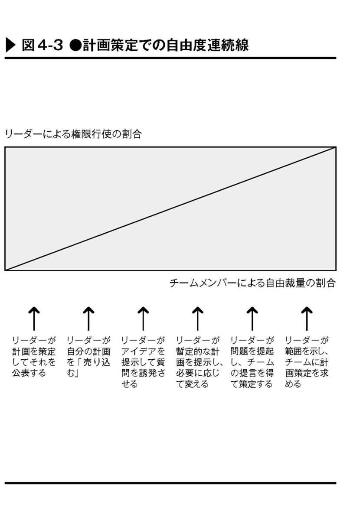
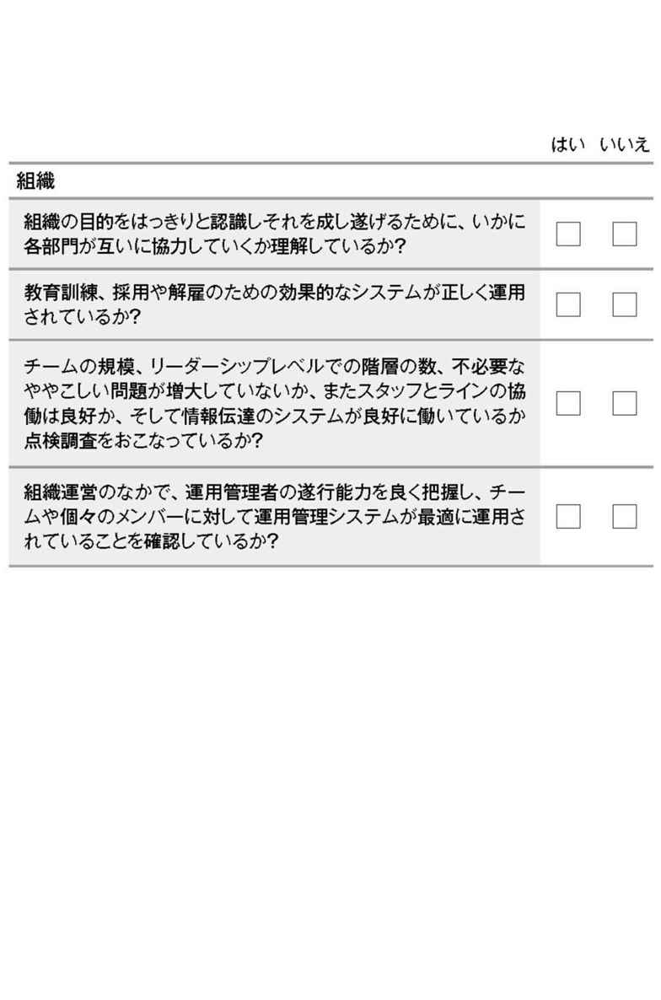

| 英国超一級リーダーシップの教科書―――マネージメントにもっとも必要な能力をどう身につけるか | |
| ジョンアデア | |
| こう書房 (2015) | |
日本の読者のみなさまへ
本書が初めて日本語版で出版されることを、私は心から喜んでいます。
この機会に、私の考えを個人的にもまた直接的にも読者と共有することを許してもらえるならば、まず出版に尽力いただいた株式会社こう書房に敬意を表したい。そして、一所懸命に監訳の労を取ってくれた、私の同僚でもあり友でもある酒井正剛氏と、また翻訳を担っていただいた高橋朗氏にも心から謝意を表したい。
この三者が労した、シンプルで実践的な本書は、読者であるみなさまがより優れたリーダーとなる一助になるものと私は信じています。
私は、この飾り気のないアプローチとその背後に隠された価値観は日本人が持つ伝統と調和されるものと思っています。この〝行動を基軸とするリーダーシップ〟（Action Centred Leadership＝ＡＣＬ）のアプローチに含まれる真実は、世界の万人に通ずるものといえます。
私たちがそうであるように、それぞれ個性を持った人々が無限に変化に富むこの世界に存在し、各人が持つ価値や尊厳と同じく、その人間性を共有しています。本書があなた自身とあなたの組織のために役立つ実践的リーダーシップ論であることを、あなたはきっと発見するでしょう。
もし、あなたが〝優れたリーダー（Good Leader）、もしくは正しい行ないをするリーダー（Leader for Good）〟になりたいと心から欲するならば、本書があなたにとって信頼できるガイドブック（指南書）となることでしょう。
「あなたのリーダーへの旅」がうまく成就することを心から願って
John Adair ジョン・アデア
英国超一級リーダーシップの教科書───目次
リーダーへの旅 第１章
リーダーへの旅 第２章
リーダーへの旅 第３章
リーダーに求められる行動とは...ファンクションからのアプローチ
リーダーへの旅 第４章
リーダーへの旅 第５章
リーダーへの旅 第６章
リーダーへの旅 第７章
カバーデザイン●ナカミツデザイン
CREATING SUCCESS:Develop Your Leadership Skills 2nd Ed. by John Adair
Copyright © 2010 by John Adair
Originally published in the English language by Kogan Page Ltd.
Japanese translation rights arranged with Kogan Page Ltd,London
through Tuttle-Mori Agency,Inc.,Tokyo
著者紹介
ジョン・アデア氏は、リーダーシップとリーダーシップ能力開発における世界的な第一人者である。これまでに世界中の１００万人を超えるマネージャーたちが、彼の開発した〝行動を基軸とするリーダーシップ〟（Action Centred Leadership = ＡＣＬ）プログラムを受講している。
ジョンの初期のキャリアはバラエティーに富んでいる。
彼はスコットランド近衛連隊＊１の隊長としてエジプトに赴任し、その後、ベドウィン連隊の副官となり、職業軍人としてアラブ諸国にて軍務に就いている。そこで６週間にわたって最前線であるエルサレム戦区の事実上の指揮を担うという得がたい体験をしている。
職業軍人を辞したのち、甲板員の資格を取得し、北極海でのトロール蒸気漁船に乗船しアイスランドへと渡る。その後は病院運営の一員としても従事した。
サンドハースト英国王立陸軍士官学校にて、軍事史の主任教官そしてリーダーシップ訓練アドバイザーを経たあと、英国産業協会の副理事長を歴任し、１９７９年、英国サリー大学にて、世界で初めてのリーダーシップ学の教授に就任した。
１９８１年から１９８６年の間は、ＩＣＩ（帝国化学会社：Imperial Chemical Industries）会長のジョン・ハーベイ卿のもとで勤務した。彼が開発したリーダーシップ・プログラムを戦略的に導入したことで、赤字に苦しむこの官僚的大会社を年間１００万ポンドの利益を生み出すトップカンパニーへと変身させる一助となった。
ジョンには40冊以上の著書があり、多くの言語に訳されている。近著に『リーダーをどのように育てるか〝How to Grow Leaders〟』や『効果的なリーダーシップ開発〝Effective Leadership Development〟』などがある。著者としての活動のほかに、彼は教師であり、またコンサルタントでもある。
彼はロンドンセント・ポールズ校からケンブリッジ大学への奨学金を獲得したのち、さらにオックスフォード大学から文学修士学位、キングズ・カレッジ・ロンドン（ロンドン大学）からは哲学博士号を授与されており、現在、英国王立歴史協会の名誉会員でもある。近年は中国から「リーダーシップ分野における傑出した研究と貢献」が認められ、名誉教授の称号を授与されている。
＊１ 監訳注）ベドウィン連隊＝アラブ遊牧民を率いた連隊。映画「アラビアのロレンス」で知られる英国陸軍将校トマス・エドワード・ロレンスも同じくベドウィン連隊を率いた。
イントロダクション
リーダーシップスキル＊２は、いまやマネージメントにおける鍵となる重要な構成要素のひとつ──鍵そのものだと言う人もいる──として普遍的に認知されている。
優れたマネージャーはリーダーとして定義される。逆もまた真なりで、優れたリーダーはマネージャーにもなれる。
どのようにしたら、あなたはそのようなリーダーになれるのだろうか？ また、リーダーとなるために、あなた自身が持つ能力を開発することは可能なのだろうか？ 後者の問いには、イエスだ。そして、前者の問いについての解は、本書にすべて記述した。
本書は、あらゆる組織での、チームリーダーとしての役割（期待）を引き受けるすべての人々のための、シンプルでかつ実践的な指南書（ガイドブック）である。
一方、すでに組織でリーダーとしての役割（期待）を担っており、自分自身のリーダーシップにおける基本能力を向上させたいと願う人にも、本書が有益なものになることを願っている。
あなたにとってリーダーシップが重要な課題であると認識されているのであれば、本書は効果的なリーダーになるための完璧なフレームワーク・基本的な枠組みをあなたにもたらすこととなるだろう。
老婆心ながら一言付け加えると──誰もあなたにリーダーシップを教えることはできない。それは自分自身が学び取らなければならず、得てして経験・実体験から学ぶこととなる。しかし、経験や実践は、原理原則や考え方を知っていてこそ役に立つというものだ。学ぶということは、この２つ──経験・実践と原理原則・考え方との間でひらめきが通じ合うときに起こるのだ。
したがって、本書を熟読し、あなたの実体験を振り返り、私が述べた内容についてあなた自身が深く思考する必要がある。この世の常として、あなたがこの実践的リーダーシップの共同探求に入り込めば入り込むほど、あなたはリーダーシップをより深く理解することになるだろう。
最後に本書の明確な主張を付け加えておく。
人々はしばしばリーダーシップとマネージメントの相違性や類似性について言及するが、大多数の実践的人々は、おもに「何をしなければならないのか」に関心があり、これはリーダーシップなのか、もしくはマネージメントなのか、あるいは両方なのか、というようなラベリング・定義付けには興味はないのである。
「白猫であれ黒猫であれ、鼠を捕るのが良い猫である」という中国のことわざ＊３があるが、本書はそのようなリーダーのためのものであり、マネージメントとリーダーシップの概念を同調させることに初めて現実的に成功した本である。
マネージメントとリーダーシップとが目指すべき方向の交点、すなわち単一かつ統合された視点がここに示されたのである。
鄧小平（トン・シャオピン １９０４年８月22日～１９９７年２月19日）は、中華人民共和国の政治家。中華人民共和国を建国した毛沢東の死後、その後継者である華国鋒から実権を奪い、事実上の中華人民共和国の最高指導者となる。毛沢東が発動した文化大革命によって疲弊した中華人民共和国の再建に取り組み、「改革開放」政策を推進して社会主義経済の下に市場経済の導入を図るなど、同国の現代化建設の礎を築いた。
もっとも基本的な問いから始めることとしよう。
なぜ、意外にも、グループ・組織内のある一人のリーダーが、特定の人物（彼・彼女）なのか？ あるいはなぜ特定の人物がグループ・組織で容認されるのであろうか？
ほかの言葉で言えば、リーダーシップとは何か？ その理由を解き明かすことから始めれば、リーダーシップの本質とその役割を明確にすることができ、かつ、あなた自身のリーダーシップスキルを向上させる大きなステップとなるだろう。
次のボックスに、この問いに対する自分なりの答えを５つ挙げてほしい。
この問いに対するよくある答えのひとつは、──あなたがボックス内に記述したなかにも反映されていると思うが──人が精神的に持つ一定のリーダーシップの資質＊４・特性に関するものだ。
これらの特性、すなわち、勇気があるとか、粘り強いというような資質は、ビジネス上に限らず一般のあらゆる場面のリーダーを生み出しやすい傾向がある。言ってみれば、彼らのリーダーシップは天性であり、生まれながらのリーダーなのだ。
しかし、この資質からのアプローチについては、２つの困難な点が横たわる。
第一に、あなたがリーダーシップの資質に関するすべてのリストを研究し、書籍で参照しようとすると、膨大なバリュエーションがあることに気づくことだろう。これは驚くにはあたらない。何しろパーソナリティ・個性やキャラクター・性格に関連する語彙は、英語で１万７０００語以上もあるのだ。
第二に、リーダーは生まれながらのもので後天的に創られたものではないとなれば、これからリーダーシップを開発しようとするあなたの助けにはならないことになる。ある会社組織が以前、ある若者に対する人事評価レポートに書いたように、「彼はまだ生まれながらのリーダーではない！」と判断されるのがおちだ。
加えて、この仮説は真実ではない。もちろん、リーダーシップにおける私たちが持つ潜在能力という点では、たしかに個々に違うものではあるが、リーダーシップにおける潜在能力は開発できるものであり、またすべきものなのだ。
もし、あなたがリーダーシップ開発に熱心に取り組めば、あなたのリーダーシップスキルはより習慣的に、あるいは無意識的に発揮されることとなる。そして、いつのまにか周りの人たちは自然にあなたを生まれながらの、天性のリーダーと呼ぶようになるだろう。
＊４ 監訳注）資質：生まれつきの性質や才能。特性：特有のすぐれた性質。
1-1 リーダーになるために必要な資質
リーダーシップにおいて、パーソナリティ・個性やキャラクター・性格を切り離すことはできない。あなたが持つべき一定の資質というものが存在する。
それは何かというと、基本的にあなたが働くグループ・職場において、模範的でかつ実地で体現でき、期待され、あるいは要求される資質を獲得する必要があるということだ。私が強調したのは、それこそがまさにリーダーシップにおける必須の要件だからである。それ無しでは、あなたはリーダーとしての確実性に欠けることになるだろう。
ちなみに、この点はリーダーとマネージャーの最初の相違点のひとつでもある。マネージャーは要求された資質を持っているかどうかは別として、階層的集団・組織においてはマネージャーとして命じることができるのだ。
エクササイズ 演習
■課題
ペーパーを準備して、あなたのフィールド（携わる仕事の領域）で働く際、期待されると思う資質を５つか６つリスト化してみてください。そして同僚と一緒にその資質を調べ確認しなさい。
この演習は私自身も数多くやったもので──たとえば、製造に携わる人、販売スタッフ、看護婦、エンジニアや経理係などの同僚と一緒に考えてほしい──リーダーシップにおける資質・特性を見つけだすのは、そうむずかしいことではないはずだ。
その際、言葉が多様化する場合があるので注意が必要である──たとえば「一所懸命働く」や「勤勉」など──特性、資質あるいは、その能力の概念が変わらないものであるならば、それは同じ意味として捉えること。
あなたがリストに挙げた５つの資質は、あなたがリーダーになるために必要なものである。しかし、真のリーダーになるにはこれではまだ十分ではない。
たとえば、戦闘に立ち向かうときに必要な勇気（フィジカルカレッジ）なくして軍隊のリーダーになることはできない。しかし、リーダーではないフィジカルカレッジを持つ兵士は多数存在するのも事実だ。この資質は軍隊が持つひとつの美徳と言える。
さて、あなたに必要なほかの資質とはいったいなんであろうか？
1-2 普遍的なリーダーシップ７つの特性
特定のフィールド（携わる仕事の領域）においては、あなたが挙げた資質が頼みの綱になるということであろう。要求される資質の程度が、多彩に変化するだろうから、これらの資質はよくある一般的なものになりがちだ。
だが、あなたが認知する以外にも普遍的なあるいは継承可能なリーダーシップの資質というものはいくつかある。おそらくそれは自分のフィールド以外のほかのリーダーたちの中から見いだすことができるであろう。
それら７つの資質を挙げることにしよう。
リーダーシップ７つの資質──包括的特性
・熱意：熱意がないリーダーというものを考えることができるだろうか？ やるべきことを一所懸命にやるのがリーダーではないのか？
・誠実：これは人々があなたへの信頼を創りだす資質である。そしてこの信頼はあらゆる人間関係において──仕事上でもまたは私生活においても──必要不可欠な要素である。「誠実」という意味は、全人格的な意味を持つと同時に、あなた自身の外部にある──特に、善とか真実といった──価値観を固守するという意味も含まれる。
・タフネス：リーダーはしばしば人々への要求者である。その水準が高いがゆえに周囲は不満を持つ。リーダーは立ち直りが早く、また粘り強い。リーダーは尊敬されることを目指すが、人気をとる必要はない。
・公明正大：効果的なリーダーは個々人の同等性を見て対応するのでなく、個々人は違ったものを持っているという相違性を見て対処する。リーダーはお気に入りをつくらず、成果に対しては公平に報酬と罰を与える。
・温かさ：冷血漢はすぐれたリーダーにはなれない。リーダーシップはあなたの心と同じく、感情をも包含するものだ。あなたが人々のために実践し、人に気を配り思いやる心は、不可欠である。
・謙虚：これは風変わりな資質ではあるが、最上級のリーダーたちが持つ特質でもある。謙虚の反対は傲慢である。誰が好き好んで傲慢なマネージャーの下で働きたいと思うか？ 優れたリーダーのしるしは、進んで傾聴し、うぬぼれたエゴを排除することである。
・信頼：信頼は不可欠な基本的要素である。人々はあなたが信頼しているか否かを直感的に感じ取っていることだろう。自分自身を信頼する、すなわち、自信を持つということは、リーダーになるための常に必要な準備すべきものではあるが、自信過剰になってはいけない、自信過剰は傲慢への一里塚でもある。
一部の読者は、このリストに誠実という資質が入っていることに疑問を持つ人もいるかもしれない。しかし、まったく誠実でないアドルフ・ヒトラーのような、優れたリーダーというのはありえないのではなかろうか？
すなわち、正しい行ないをするリーダーと優れたリーダーとの間には明確な区別があるということだ。ヒトラーが優れたリーダーであったかどうかは議論すべき点ではあるが──彼は尊敬されたりされなかったりしたが──少なくとも彼は正しい行ないをするリーダーでは絶対になかった。
いや、これは少々話が飛びすぎた。リーダーシップの観点からいえば、誠実という岩床に安住するリーダーシップは持続しない。常に失敗するし、しかも大抵は意外に早く来る。なぜか？ それは誠実になるということは人間本来が志向するもので、それのみではリーダーシップの持続はできないのである。
リーダーシップの資質について述べてきたが、あなたのリーダーシップにとって自分は何者か？（どんな資質を持つのか？）という問いが重要な要素であることはご理解いただけただろう。ズールー人のことわざがある。「あなたは私に向かって大声でどなるので、私はあなたが言っていることが聞こえない＊５」。
「自分とは何者か？（自分はいかなる者か）」という要素はこれから、私たちが登る山（リーダーへの旅）の３つのメインルートのひとつでもある。「リーダーシップとは何か？」、「なぜ、グループのリーダーとして、ほかならぬ特定の人物が現れ出るのか？」という核心的な問いに対する３つの答えのうちのひとつだ（ほかの２つのアプローチについては、第２章と第３章を参照してほしい）。
さて、いまやあなたは前述のリストに挙げた資質をすべて開発することができる。あなたは自分に自信を持ち、新たな熱意を抱き、そして誠実に富むことが可能なのだ。しかし、これらを会得するには相当な時間がかかるのということも事実だ。
リーダーへの山を登るにはほかの２つのルートのひとつからスタートしたほうがよいと思っている。そうは言っても、これからも私は「資質からのアプローチ」へとときどき引き返して、あなたに助言することになるだろう。
ここで個性と性格という点から見て、あなたの強みと弱みという切り口から自己の成長の進捗度合いを測ってみることは、きっと建設的な示唆と変化をあなたにもたらすことだろう。このチェックリストのスコアは、常に正直に自身にフィードバックすること。おそらくあなたにとって厳しい評価となるに違いない。（私の経験から言うと！）
さて、あなたがリーダーシップに必要な資質を有しているかどうか、次のチェックリストで自問自答してほしい。
＊５ 訳者注）〝I cannot hear what you are saying to me because you are shouting at me.〟
同じことを言ってもあなたがどんな人物かで相手の受け取る態度が変わるという意味。一般的にはラルフ・ワルド・エマーソンの格言として知られている。
リーダーシップの二つめのアプローチ（ルート）は、第１章で挙げた普遍的な７つの特性の存在を軽視する傾向にある。それはリーダーシップというものが、状況に左右されるという考えに重きを置いているからだ。
ある状況ではＡという人がリーダーとして現れ出る一方、ほかの状況においてはＢやＣという人がリーダーになるかもしれない。たとえば、ウィンストン・チャーチル＊６は戦時という状況では偉大なリーダーであったが、平時はそれほど優れたリーダーではなかった。
このように、真実はそれより少々複雑である。ある資質は状況に左右されるが、ある資質──たとえば熱意、道徳的勇気＊７や気力など──は、まったく異なった状況下でもリーダーに見いだされるものだ。
私が思うに、この状況的アプローチの主たる貢献は、仕事上での知識の重要性を強調している点だ。そして知識は権威へと結びつく。一般的に、人々の間では４つの権威がある。
●地位と階級からくる権威...「おれがボス（上司）だからこれをやれ！」
●知識からくる権威...「権威はそれを知っている人から湧きでる」
●個性からくる権威...この極端な例はカリスマである
●道徳的権威...他者に犠牲を払うよう求める権威
たとえば、ネルソン・マンデラ＊８は、威厳があり誠実で魅力を持っていた。彼は長年にわたって牢獄につながれていたため、彼の仲間である農夫や女性に対して、国民の調和と繁栄への長い道のりの中で、苦難と困難を容認することを求める道徳的権威を有していたのである。
なぜ船員たちは、船が嵐に翻弄されるときに船長の命令を忠実に実行するのだろうか？ 彼らは船長が海と航海の知識を熟知していると感じているからであり、幾多の嵐での経験によって何をすべきかよく知っているからだ。知識はほかの者へ信頼を創造するのである。
このような理由から、技術的または専門的な知識の獲得は、あなたがリーダーとして成長するための現実的な部分であるが、ここでは、一定の本質的な部分だけを自分自身で獲得することとしよう。
話は少しばかりチャーチルに戻るが、１９４０年に彼はただの閣僚で、第一次世界大戦では軍需大臣の経験しかなかった。彼自身の支持母体の大半は、西部戦線において命令一下で戦う連隊長のような、専門的に訓練された将校たちであった。彼の天分、雄弁さと個性は別として、チャーチルは戦争を遂行するための重要な知識の集積を、彼の同僚の誰よりも多く持っていた。「盲人の国では隻眼が王」なのだ。
これと同じ原理は、あなたにも当てはまる。しかし、最適な技術とか専門的知識の習得が、あなた自身のリーダーシップのための資質だとは思わないことだ。重ねて言うが、それは必要条件であって十分条件ではない。
権威──すなわち地位、知識、そして個性という主な要素のすべては重要である。自由になり、仲間と協力して大いなる成果をあげるためには、あなたは一番目の地位と同じように二番目の知識や三番目の個性に頼る必要がある。しかし、それは３つの縒り合せたロープのようなものであり、あなたの重心のすべてをたったひとつに賭けてはいけないのである。
事例研究──知識によるリーダーシップ
マルティンは素晴らしい技術者であり、チームリーダーに昇進した際は、喜んでその職責を彼は引き受けてくれた。生産部門の責任者であるサリー・ヘンダーソンは、第一線のマネージャーとしてのマルティンの能力に疑いを持っていたが、長年勤務して技術的に経験豊富なマルティンのような人々を、管理職の役目へ昇進させてより賃金を与えるというのが会社の方針であった。
数週間後にチームのパフォーマンス（成果）は、ほかのチームと比べて遅れをとるようになった。マルティンはすべての答えを知っており、他者の意見を聞こうとはしなかった。ものごとが間違った方向へ進みはじめると、彼はますます居丈高になった。そして彼は、あるチームのメンバーをほかのメンバーの面前で泣かせてしまったのである。
「しかし、私には理解できないわ」マルティンがストレスで数日欠勤した間に、ヘンダーソンはチームに尋ねた。「マルティンはリーダーじゃないの？」
「たしかに彼は工場のことを、隅から隅まで知っています」とチームの一人が答えた。
「彼は本当のエキスパートです。でも、リーダーとは違う。私たちは彼に対して『リーダー』という言葉は使いたくない。彼はリーダーなんかじゃありません。技術的知識よりも重要なのはリーダーシップなのです」。
リーダーとなるための初期の段階として、あなたは必要な専門的かつ技術的な知識を得たとしよう。おそらく仕事のなかでよく知っている領分では申し分のない働きをするだろうが、あなたの領分は、刻一刻と変化している状況なのだ。さて、あなたはこの状況変化にどうのように柔軟に対処するのだろうか？
あなたは前進と撤退の両側面に対処できるだろうか？
次のチェックリストは、あなたが予見できないようなものも含めた、千差万別に状況変化するなかでも、責任を持ち続ける柔軟性を開発しようとしているのか否かを、確認する手助けになるだろう。
＊６ 訳者注）サー・ウィンストン・レナード・スペンサー＝チャーチル（Sir Winston Leonard Spencer-Churchill １８７４年11月30日～１９６５年１月24日）は、イギリスの政治家、作家、軍人。１９００年に政界入りし、第一次世界大戦時には海軍大臣、軍需大臣として戦争を指導した。第二次世界大戦の開戦とともに海軍大臣となり、１９４０年に首相となって１９４５年に退任するまでイギリスの戦争を主導した。チャーチルの半ば独裁的な指導のもとにイギリスは戦争を戦い抜き、アメリカとソ連に並ぶ戦勝国の地位を得た。しかしながら、終戦直後の１９４５年７月におこなわれた総選挙で労働党によもやの敗北を喫し、彼が率いる保守党は下野を余儀なくされている。
＊７ 監訳注）道徳的勇気（モラルカレッジ）：正しいと思うことを実行する勇気。
＊８ 訳者注）ネルソン・マンデラ（Nelson Rolihlahla Mandela １９１８年７月18日～２０１３年12月５日）は、南アフリカ共和国の政治家、弁護士。若くして反アパルトヘイト運動に身を投じ、１９６４年に国家反逆罪で終身刑の判決を受ける。27年間に及ぶ獄中生活の後、１９９０年に釈放される。翌１９９１年にアフリカ民族会議（ＡＮＣ）の議長に就任し、アパルトヘイト撤廃に尽力し、１９９３年にノーベル平和賞を受賞。１９９４年、南アフリカ初の全人種参加選挙を経て同国大統領に就任。民族和解・協調政策を進め、経済政策として復興開発計画（ＲＤＰ）を実施し、１９９９年におこなわれた総選挙を機に政治家を引退した。２０１３年12月５日に死去した際には、世界各地で追悼の式典がおこなわれた。
■３サークル...３つの欲求の存在
リーダーシップ考察での第３のルートは、集団・グループに視点を当てるものだ。集団へのアプローチと呼んでもよいこの考えは、グループの欲求・ニーズに応えるファンクション（働き）を使うことでリーダーシップを解決するというものだ。きっと私たちの決め手となろう。
すなわち、このファンクションとは、集団の欲求に応えるためにリーダーが「何をするのか」ということだ。もしあなたがリーダーシップを含む複雑なものごとや事象を実際に稠密に眺めると、そこには常に３つの構成要素または変数が存在することがわかるだろう。
●リーダー自身に起因する要素 ─ 個性と性格の特性
●状況に起因する要素 ─ ある部分は変わらないもの
ある部分は変化するもの
●集団に起因する要素 ─ フォローアー（メンバー）の欲求と価値観
事実、個々人がそれぞれ特異な存在であるのと同じく、それぞれの仕事をする集団も常に個々に違ってくる。
集団が形成されると、すぐに集団としての個性（グループパーソナリティ）が現れる。だから、ある集団では仕事がうまくいっても、別の集団でやるとうまくいかないこともあるかもしれない。すべてのグループと組織には独自性があるのだ。
しかし、これは真実の半分だけだ。もう半分は、仕事をする集団には、個人と同じように確実に共通した欲求が存在するということだ。そこには図３‐１に示されるように、欲求が互いに重なり合う３つのエリアがある。それが核心的に重要なこととなる。
3-1 タスクの欲求...仕事から生ずる欲求
仕事をする集団・ワークグループ＊９や組織は、やろうとするタスク＊10・課せられた仕事・課題が、個人でおこなうには大きすぎるがゆえに存在する。
丘や小山なら一人で登ることができるかもしれないが、あなた一人でエベレストを登ることはできないだろう。あなたにはそのためのチームが必要となるはずだ。
では、なぜタスクの欲求が生ずるのだろうか？ それは共通するタスクを成功裡に成就させたいという（タスク必達）圧力が形成されるからだ。もしタスク必達が妨げられると、ワークグループの人々はとてもフラストレーションを感じることになる。
人々のフラストレーションを取り除き、タスク必達がうまくいくようにする必要性──すなわち、タスクに起因する欲求が生ずるのだ。
3-2 チームの欲求...チームを維持する欲求
チームをつくり維持する欲求に気づくことは、タスクの欲求のように簡単にはいかない。いかなるグループでもそのグループの実体を見きわめることは、氷山の一角と同じように、外面からチームを見てもわからない。タスクの欲求はコトにあり、チームをつくり維持する欲求はヒトにあるという見方は、あまり良い助けにはならない。
重ねて言うが、集団を考えるうえで重要なことは、集団を崩壊させるような外部からの力ではなく、集団内のメンバーや考え方の分裂から脅かされる可能性がある点だ。
タスクを達成させる過程で、集団自身を存続させるためには、ときにあからさまに出てくる外部や内部からのプレッシャーに対して、いかに優先順位をつけて対処するかが肝要となる。
多くの明文化された、あるいは暗黙の集団内でのルールは、集団の単一性を生み出しその結束力を保つために、ある程度のマイナス分は覚悟してできあがっている。
ボートを揺らし、グループの規範や集団のバランスを乱した者に対する反応は、好意的な寛容からあからさまな怒りへと激変することとなろう。集団内における共通の本能的感覚は、「団結すれば立ち、分裂すれば倒れる」ということだ。
集団内で自分たちらしく良き相互関係であるということは、共有した最終目標に向かって進むためのひとつの大切な手段でもある。この集団の団結力を創り出し、促進させるために必要なことを、私はチーム維持の欲求と呼んでいる。結局のところ、「チームは結束すれば強い」と誰もが知っているということだ。
3-3 個人の欲求...個人に生ずる欲求
３番目は、個人が集団内に持ち込む自分自身の欲求である。住まい（今日では賃金の支払いで大概は済ませる）や食べ物などの物理的なものだけでなく、心理的な欲求──表彰（承認される）、やりがい、地位など、仕事の場面場面で他の人々と関係を保つためのより深い欲求が存在する。
これらの個人がもたらす欲求は、おそらく私たちがときに実感するよりも奥深いものだ。
これらは人間としての日常生活の深いところから派生し、私たちをグループに引き付けたり引き離したりする。人はただ生きるというだけでなく、自分を高め認められたいという欲求を持っているという事実は根源的なものだ。
この高めたい成長したいという欲求は、すべての社会的行動──友だち付き合い、結婚生活や隣人付き合い──の全般に渡って見いだされるが、多くの人々が組織・職場の中で多大な時間を費やすため、必然的に仕事をする集団（ワークグループ）においても突出して重要なこととなる。
3-4 ３サークル（タスク・チーム・個人）の相互作用
これら３つの欲求は、互いに重なり合い影響しあう。たとえば、共通のタスク（課せられた仕事・課題）が成就したならば、チームの結束を固くし、また個人の人間的欲求を満足させる傾向となる。もし、チーム内で結束力がない場合──チーム維持が欠如した場合──は、仕事でのパフォーマンスは落ち、個々のメンバーの満足度は減少してくる。
すなわち、仕事をする集団における欲求は、互いに重なり合うサークル図で表示することができる（図３‐１）。
最近、私はスライドやプロジェクターでこのモデルを表示するときは、サークルの色を赤、青および緑という屈折率が異なる光の３原色（色材の３原色ではない）を使う。
この３つのサークルモデルは、普遍的なモデルだということを示している。あなたがいかなる業務分野にいようと、いかなるリーダーシップレベル──チームリーダーレベル、オペレーショナルリーダーレベル、戦略的リーダーレベル──だとしても、あなたは常に３つのサークル、すなわちタスクとチームと個人のことを考えるべきだ。リーダーシップとは、自己中心的な活動ではなく他者中心的な活動なのである。
この３つのサークルモデルはシンプルであるが、単にシンプルで、表面的なものではない。この３原色を心にとどめておくと何が起こるか、私たちはテレビ番組を見る際に起こることで類推できる。
フルカラー動画は、これらの３原色と重ね合わさったエリアでは３つの補色のドットから作られている。仕事上の営みという複雑な音声動画から、立ち位置を一歩離すことで、はじめてあなたはこの３つのサークルの基本的パターンを理解できるのだ。
もちろん、仕事上の営みはモデルが示すようにクリアーで常にバランスよく成り立っているわけではないが、それでも仕事には３つのサークルが存在するのだ。
3-5 ファンクショナルアプローチをリーダーシップへ
リーダーシップによって一体全体、何をおこなおうとしているのか？ 一言でいうと、共通するタスク（自分たちに課せられた仕事・課題）の完遂とチームの協働を確かなものにするために、ファンクション（働き）を発動させることである。
ファンクション（働き）とは、あなたが為す（ＤＯ）こと行動を起こすことである。どんな資質・特性を持っているかということとは対極にあるものだ。たとえば、チームが分裂の力によって脅威にさらされている場合には、誰かが目標を定め、計画を立て、あるいは一緒になってチームをつくり維持しなければならないのだ。
私たちはいま、確固たる考えの上に立っている。あなたは、タスクの欲求・チームの欲求・個人の欲求に応えるというリーダーシップのファンクション（働き）の考え方を学ぶことができるのだ。それは、効果的なリーダーシップを発揮するための入り口に立ったという意味だ。
しかも、あなた自身が持つ実践、学習、経験、そして振り返るという能力を使って、ファンクションを発揮し学ぶことができる。
ファンクションを使うことはあなたにとってのリーダーシップスキルとなるであろう。これらのスキル・技能は、リーダーシップをいかなるときも１００％発揮できることを意味するわけではないが、必要に応じてすぐに使えるよう準備されているあなたの道具箱、その中でも鋭く、光り輝き、よく油が引かれたツールとなることは間違いない。
3-6 リーダーとしての役割...期待されるもの
リーダーの役割は、いまやあなたにとってガラスのように明確（クリアー）であろうが、ここで役割という言葉がしばしば誤解されるので、一般的な補足説明をさせてほしい。
劇場で使われる隠喩としての「役割」は、ドラマの中で引き受けるあるいは割り当てられるパートを指す。広く社会一般で使われるときの「役割」は大雑把に言うと、人々があなたに持つ期待と定義できる。
もちろん、いろいろな人々が別の期待を持てば、あなたは役割の矛盾を体験することになる。たとえば、あなたの両親、人生の伴侶や子どもたちの期待には相違があり、あなたは日常生活においてその期待に対して大いなる緊張感を感じているはずだ。
私たちは仕事上においてチームのメンバーに、役割以外の行動を期待してはならない。実例を挙げると、昨夜テレビでやっていたジョークを言うために、警官があなたの車を停車させたとしたら、私たちのほとんどは、謹厳実直なヴィクトリア女王と同じくらいちっとも面白くないだろう。なぜなら、私たちは警官にこのような振る舞いは期待していないからだ。
このことは、３つのサークルモデルのどこにあてはまるかということだ。あなたにとって為すべきことは、客観的にリーダーの役割・期待を特定することである。チームのメンバーたちはリーダーに対して、自分たちを助け、共通のタスクを遂行し、協働作業による相乗効果を醸成し、そして個人にも対応し、これらの欲求を満足させることを期待しているのだ。互いに重なり合った円（サークル）は役割についての３つの切り口を集成しているのだ。
リーダーシップのファンクション（働き）には光と類似性があり、それは太陽光がプリズムを通した際の虹色のカラースペクトルに似ている。（図３‐２参照）
第４章では、あなたがこれら８つのファンクションを発揮できるようになるための、実践的な方法を一緒に考察することとする。
その学習手順は、以下のとおりである。
●まずは、最初に必要とされる能力
●その次に、スキルによる実践
●そして、事例研究を通じて学習する
これからが、正しくリーダーとして、あるいはリーダーになろうとするあなたにとっての正念場である。能力はあなたの手の内にあるが、スキルを獲得するために手を伸ばしつかみ取り、あなたがリーダーシップにおける優れた点を発揮するまでは決して満足してはならないのだ。
3-7 リーダーシップについての備忘録
チームレベル（課単位）、オペレーショナル（部門単位）レベル、そして大組織レベル──いかなるリーダーシップにおいても重要なことは、次のとおりである。
●リーダー自身：パーソナリティ（個性）、キャラクター（性格）の資質
●状況：ある部分は変わらない、ある部分は変化する
●チーム：メンバーたちの欲求と価値観
いかなる場合でも、図３‐１に示した、重なり合いそして干渉し合う３つの欲求のサークルに焦点を当てなければならない。リーダーシップのファンクション（働き）の実践行動は、図３‐２に示すように集約される。
■リーダーシップの実践行動
本章で私は、主要な８つのリーダーシップ・ファンクション（働き）の実践行動のひとつひとつを順に考察し、あなたがこれらのファンクションをよりよく発揮できるような方法を見いだす一助にしたいと思う。
常に思い起こしてほしいことは、タスク、チーム、個人という３つのエリアの重なり合いが非常に大きいということだ。だから、それぞれのファンクションは、この３つのサークルのすべてにおいてよく影響を与えることになる。
たとえば「計画する」というファンクション（働き）の実践行動を見てみると、タスクだけに影響するように思える。しかしながら、チームをバラバラにするような、あるいは個人の不満がたまるような悪い計画などありえないはずだ。この「計画する」というファンクションは、３つのサークルすべてに関わるのだ。
心にとどめてほしいのは、すでに述べたように、リーダーシップには異なるレベルが存在するという点だ。（図４‐１参照）
・チームレベルでのリーダーシップ
５名から20名程度のチームを率いている場合。
・オペレーショナルレベルでのリーダーシップ
仕事や組織において重要な部門の運営を任されており、部門は複数のチームで構成され、各チームリーダーはあなたに報告相談をする義務を持っている場合。
・戦略レベルでのリーダーシップ
事業全般または組織全体を率いており、前述した２つのレベルのリーダーシップにおいてすべての責任を担っている場合。
３つのサークルだけではなく、８つのファンクションについても、個々に違う方法によってこれらのすべてのレベルに適用される。
以下の各ファンクションの簡潔なディスカッションのなかで、これらの相違についてときおり指摘することにするが、ここではチームレベルであるチームリーダーシップの役割（期待）について焦点を当てていきたい。
ここで述べられるリーダーシップの実践的アプローチは、ときとして行動を基軸とするリーダーシップ（Action Centred Leadership : 略してＡＣＬ）と呼ばれる。ファンクション（働き）とは、チームの発展や維持に寄与する一連の実践行動（Actions）である。ちょうど身体のある臓器が、全身に関係する機能を持っているのと同じだ。
「ファンクション」という言葉はラテン語から派生しているが、意味はパフォーマンス（実行）である。ファンクションは私が「役割」──プロフェッショナルな立場にふさわしい特別な活動──と呼んでいる広義の意味で用いられることがある。
あなたはリーダーとしてファンクショナル（実践的）であるか？ 別な言葉で言うと、あなたはリーダーに期待された正しいファンクションを実行する能力があるかどうか？
熟考してもらいたいポイントだ。
4-1 実践行動...タスクを明確にする
「タスク」はとても一般的な言葉である。単純な意味からすると〝やるべきことに必要な何か〟であるが、通常はあなたが希求する何かだ。
概して言えば、チームや組織に属する人々ならば彼らがそこで何をするのかという一定の考えを持ち合わせている。しかし、それらの認識をひとつの目標という形で束ねる必要がある。それは、左記の６つである。
●明快であること
●具体的であること
●達成期限を持っていること
●現実的であること
●チャレンジング（挑戦的）であること
●評価可能なものであること
最後の点については、シンプルであるが「成功の基準（尺度）」を意味している。それによって、あなたとチームが目標を達成したかどうかを知るものとなる。
たとえば、もしあなたの達成目標、ゴールがエベレストの頂上に到達することであれば、いつ自分が到達するか知りたいはずだ。もちろん、数値では測れない人間の努力に関するほかの多くの分野については、成功の基準は明確性に乏しくなる。
リーダーシップは、「何を」と同じように「なぜか」という問いに答えることにも関係してくる。ボス（上司）は明確な方法であなたに何をすべきかを伝えるかもしれないが、リーダーは自発的に協働するに至る重要なかつ最初のステップとして、「なぜか」を解説し、伝えようとする。──これが折り紙つきの申し分のない真のリーダーシップなのだ。これはモチベーションと重なる部分でもある。
ここで、メンバーに行動の背景や理由を十分に付与することについて少し説明を加えたい。
３つのサークルのうちタスクに関するサークル内に限定して言うと、すべてのリーダーは策定したチームの目標がその組織の目的（長期目標）や中期目標に関連づけられるようにすべきだということだ。
別の言葉で言うと、リーダーは方向性を整える。そしてときとして、しっかりと自分の言葉でその目標を語ることができるようになることが必須だ。語ることにより、彼らは限定的なリーダーからより普遍的なリーダーへ、実務的なリーダーからより象徴的なリーダーへと移行するだろう。
事例研究
ガイアｐｌｃ（公開有限会社）は掘削機器の販売と製造で高収益を上げている会社だ。あなたは彼らの目的や存在理由を十分に理解しているとしよう。
彼らは現在の戦略のなかで３つの中期目標を持っている。
すなわち、オイルおよびガスの深海掘削というベストセラー事業の品質を改善すること、５年以内に世界市場の40％を獲得すること（現在は23％）、そして宝石掘削市場のための新たな製造事業の開発である。
マイク・ウィルソンはアバディーン工場のチームリーダーの一人だ。今週の彼のチームの主たる目標は、フォークランド諸島沖の新しい油田での事業のための入札の一部をなすプロトタイプ掘削機器の組み立てである。
週末までに、組み立てられた掘削機器を主な５つの品質基準についてテストして、結果をレポートにまとめる必要がある。そして、それを金曜日の午後６時までに製造責任者に手渡さなくてはならないのだ。
もし、あなたがマイク・ウィルソンの立場だったら、今週の目標が会社の中期目標にとってなぜ重要であることを説明するだろう。同時にこれらの戦略目標が互いに認識され、共通の目的として成就させようと仕事に取り組むこととなろう。
そして「Jacob's Ladder（ヤコブのはしご）＊11」（図４‐２参照）を下りる別な方法として、あなたは「どのように」という問いに答えることになるだろう。どのようにして私たちは、ガイア社の中で掘削機器の販売および製造事業において、収益を常に最大化していくか？
答え：私たちは、──品質を改善し、マーケットシェアを拡大し、新たな事業を創造する──という戦略的中期目標で示された、直接的かつオープンな道に沿って前進する。
ガイア社は、会社が衰退する前に自らの手で変化しようとしていることにあなたは気がつくだろう。単なるマネージメントとは対照的に、変化はリーダーシップのために要求されるおそらく最も重要なファクターである。
近代英語の「Lead（率いる）」という語は、古い英語の「A way（方向）,Journey（旅）」そして「To travel（旅をすること）」という意味に関係している。すなわち、旅の用語なのだ。
もし、あなたが変化に富む旅程にいないならば（変化に乏しい日常業務が主であれば）、リーダーシップなんかに悩まず、マネージメントに徹することだ。
およそどのようなレベルのリーダーであろうとも、組織の方向性に関する感覚を研ぎ澄まし集中する必要がある。
「ビジョン」とは正確に言うと、あなたが進もうとしている場所はどこかという意味である。創造的思考を組み合わせることによって、グループあるいは組織に新たな方向性を与えることができる。
めまぐるしく動くマーケット、技術革新、そして経済や社会生活が変わる環境のなかでは、変化は常にあなたに、ねらい（中期目標）や目標と同じく会社全体の目的（長期目標）についても深く考えさせることを強いるものだ。
この種の思考は、戦略的リーダーの基本的な責務であるが、賢明な戦略的リーダーであれば、同じようにオペレーショナルリーダーやチームリーダーたちをその過程の中にうまく巻き込むことであろう。あなたは、自分が達成することを課せられた目標の背景となる理由を理解する必要があるのだ。（「チェックリスト：ファンクション...タスクを明確にする」参照）
＊11 訳者注）旧約聖書によれば、ジェイコブス・ラダーは「ヤコブのはしご」もしくは「ヤコブの階段」と呼ばれており、ヤコブが夢に見た地上から天まで届いているはしごを意味する。ニュアンスはむずかしいが、理想的な王道という意味に多く使われる。
4-2 実践行動...計画する
「計画する」ということは、あなたが目標を達成する前に、いまいるところから、こうありたいと思うところへ連なる、〝意欲的な架け橋〟を作ることを意味する。
「計画する」というファンクションは、どのようにという問いに答えることによって、タスク完遂に必要なグループの欲求を満たすことにある。しかし、「どのように」という問いは、「いつそれをやるのか始めるのか？」そして「誰が何をやるのか？」という問いに直結する。
リーダーシップの視点から見て、鍵となる論点は、計画策定にあなた自身がどのくらいの立ち位置で関わり、この「計画する」というファンクション（働き）をあなたのチームにどこまで委ねるかということになってくる。
再び、ここでマネージメントとリーダーシップの区別がいささか古い形式論のなかに現れてくる。
「科学的管理法」の創始者であるＦ・Ｗ・テイラー＊12は、小型装置の組み立てラインのように、作業することと計画や管理する機能は、明確に分離したときに物事はよりうまくいくという考え方を広めた。後者（計画や管理）は、マネージャーや監督者（スーパーバイザー）の縄張りだというわけだ。あなたは（この考えに）同意しますか？
「計画する」というファンクションを理解するための有効な方法として、図４‐３に描かれるような、いろいろな割合で切り分けが可能なケーキ理論がある。

リーダーシップの視点から眺めると、図４‐３の計画策定の連続線においては、右側にいけばいくほど優位性が高くなることに注目する。すなわちメンバーの仕事に影響を与える判断を委ねれば委ねるほど、実行するための動機が与えられることとなる。
これは「権限委譲」と呼ばれている、ひとつの切り口である。
しかしながら、一方で、あなたが計画策定の連続線のいちばん右端で仕事をすると、結果に対するコントロールを失うことになることに気づくだろう。たしかにチームはあなたの要望に合致した計画を策定するかもしれないが、それはあなた自身が策定したものではない。あなたはこれを受け入れることができるだろうか？
あなたが計画策定で連続線のどの位置で行動するかは、いくつかの重要な要因に左右されるが、特に注目すべきは計画に利用できる時間とチームメンバーの能力レベルである。
正しい「スタイル（流儀）」はひとつではない。
最上級のリーダーは首尾一貫しているものである。自分がチームメンバーと共にどこに位置するかを知っており、多くの点でそれが予測可能なのである。しかし、意思決定する際は、きわめてフレキシブル（柔軟性を持って対処している）である。よって、優れたリーダーは、メンバー個人そしてチームと寄り添って仕事をおこない、１日単位で違ったポイントで運営していくことだろう。
策定した計画にのっとり、ひとつの仕事がスタートすると、環境や状況によっては計画の修正や改定を指示する必要が出てくることがあるかもしれない。
また一方で、変化に対応したフレキシブルな展開の必要性と、みんなが同意した計画にこだわる粘り強さや持続性との狭間で、あなたは舵取りしなくてはならない。もちろん、多くの不必要な計画変更は混乱を招くこととなる。軍隊での格言で例えれば「命令─撤回─混乱＊13」である。
まとめると、計画策定はいかなる組織やチームにとっても重要な活動である。計画は選択のための調査を必要とするが、それは心を開き（オープンマインド）、励ましあい、創造的な方法で最も良くなし得ることができる。当然、予知できる不測の事態への対応は、すべからく計画に組み込まれるべきだ。
計画策定においては、何を、なぜ、いつ、どのように、どこで、誰が、という問いに答えることが要求される。計画策定について吟味してみよう......。
＊12 訳者注）フレデリック・ウィンズロー・テイラー（Frederick Winslow Taylor １８５６年３月20日～１９１５年３月21日）は、アメリカ合衆国の技術者（技師、エンジニア）で、経営学者。科学的管理法の発案者で、現代においては「科学的管理法の父」と称される。
１８９８年よりベスレヘム・スチール社で管理の再編成を試み、労働者の作業や道具の標準化を図った。その結果、生産に関わる計画（日程や作業内容など）の立案の重要性が高まり、計画立案専任の部署が設置されるなどの近代化への一歩といえる功績を残した。
＊13 訳者注）〝Order-Counter-Order-Disorder〟
米軍の陸軍士官学校の食堂に掲げられている格言。上官たるものは命令を出すときは熟慮して出さなくてはならない。そして一度出した命令は簡単に撤回してはならない。もし、それを安易に撤回すると部隊は混乱に陥る。すなわち、命令は熟慮して出してそれを徹底せよ、という意味の格言であり、士官たるものの最も重要な教えのひとつである。
4-3 実践行動...要約する
「要約する（ブリーフィング）」は、チームに対して目的や計画の要点を説明するコミュニケーション（伝達）としてのファンクション（働き）である。チームの正面に座るか立つかして対面（フェイス・トゥー・フェイス）でおこなうのが普通である。
ほかのすべてのファンクション（働き）と同様に、ブリーフィングはスキルを持たないとできない。というのは、グループに対してブリーフィングする場合、良い方法と悪い方法が存在するからである。ブリーフィングは、実際問題として、より大きなコミュニケーションスキルである効果的な話し方の一部分なのだ。
以下、ブリーフィングする際のガイドラインを示す。
●準備せよ。
リハーサルして実行せよ。あなたが見た目に専門家然としているかどうか確認せよ。「一枚の絵は一千語に匹敵する」。
●明確であれ。
何をあなたが言いたいか、曖昧でないか、定義がはっきりしているか、ぼんやりしていないかをダブルチェックして、政治家のような（あいまいな）話し方は避ける！
●シンプルであれ。
複雑なことは少なくし、簡略化しすぎないように簡潔な形式にせよ。あなたの聴衆が理解できないような技術用語や専門用語は排除せよ。
●活き活きとせよ。
ユーモアや確信や熱意によってあなたのメッセージを色づけせよ。燃えさせよ──興奮、チャレンジングそして熱狂させよ。
●自然体であれ。
あなたは偉大な雄弁家になる必要はない。ひたすらあなた自身──最高の自分──であれ。
できるだけわずかな言葉で礼儀正しくしゃべる、ただし、おおむね平易に。スピーチの最後が感動的である必要はないが、理解してもらう必要はある。
ウィリアム・ペン＊14
ブリーフィングは、〝プロジェクトの最初だけにおこない、その後に忘れてしまう〟ようなものではない。十中八九、特にチームが新米チームである場合や経験が不足しているチームの場合、あなたは仕事の進捗に合わせ目標と計画を繰り返し指示する必要がある。ブリーフィングは、常時遂行されることを期待されるファンクション（働き）なのだ。
コミュニケーションとリーダーシップとは、対（姉妹）の関係にある。ブリーフィングでのポイントはひとつのスキルに集約される。すなわち演説である。そして、忘れてはならないことは、傾聴（リスニング）も重要度としてはほぼ同等であるということだ。
誰もが計画やその実行に対して何かしらの貢献をする。アイデア出し、提案や情報伝達など。したがって、あなたは聴く耳を持ったリーダーとなる必要がある。
説明会や会議──業務ミーティング──では、いま抱えている問題を一般的な事項に結び付けることにより、３つのサークルすべてにおいて価値ある働きをあなたにもたらす。タスクの分野においては、たとえば、あなたが方向性や集中性を与えることにより、挽回できる機会を得られる。
状況が許すなら、リーダーが希求するある程度のわがままな主張を、グループは受け入れ、歓迎すらしてくれるだろう。あなたはチームに対していま抱えるタスクに取りかかれるように緊張感を持たせ、かつチームの士気を高めることができる。
そして、あなたはミーティングを成功裏に終わらせるために自分を助けてくれたメンバーに対して感謝し、その意見を聞いて個人の欲求に応えることもできる。ミーティングでのブリーフィングは、各個人の貢献が企業の成功のためにいかに重要かを強調するチャンスとすることもできるのだ。
＊14 訳者注）ウィリアム・ペン（William Penn、１６４４年10月14日 ～１７１８年７月30日）は、イギリスの植民地だった現在のアメリカ合衆国にフィラデルフィア市を建設しペンシルヴァニア州を整備した人物である。ペンが示した民主主義重視は、アメリカ合衆国憲法に影響を与えた。非常に雄弁で卓越した演説家としても知られる。ちなみにペンシルヴァニアの由来は「ペンの森の国」というラテン語から来ている。
■チームビルディング＊15：価値考察
諸君は私を知らないし、私は諸君を知らないが、われわれは共に任務に就いた。したがって、われわれは互いに理解しなくてはならない。われわれは互いに信頼を持たなくてはならない。ここでは数時間しか過ごしていないが、私が来てから見聞きしたことで、私は諸君に信頼を持っていると今ここで言う覚悟ができている。
チームとして、われわれは共に働こう。最初の仕事のひとつは、私が雰囲気の醸成と呼んでいることだ。ここで気づいた全体的な雰囲気は好ましくない──ここの雰囲気は懐疑的で後ろ向きだ。すべては終わりにしなければならない。
いまや悪いときは過ぎ去り、（勝利は）達成できると誰もが信じることを私は欲する。もしここで誰かがそれができないと考えるなら、直ちに出て行ってもらう。私はいかなる懐疑家も欲しない。（勝利は）達成可能であり、また疑問の余地なく達成されるであろう。
元帥モントゴメリー子爵、エル・アラメインの戦闘前、イギリス第８軍の指揮引き継ぎの際のスタッフへのスピーチ抜粋＊16。
リーダーシップに関するいくつかの最良の事例は、リーダーが自信をなくし落ち込んだグループを掌握し、「反転させるとき」に発露される。最初のブリーフィングのためのミーティングは、このプロセスのなかでも特に重要となる。
というのは、仕事関係においては、最初の印象が情愛や友情と同じぐらい根本的なものだからである。最初のミーティングでメンバーに植え付ける印象は、永遠に彼らのなかに残る。もし、あなたがその仕事に不慣れであれば、（具体的な）業務については一般的な言葉で表現せざるを得ないかもしれないが、──それでもあなたは自分の最初の考えを共有する以上のことができる。
すなわち、集団の常識や風土の変化のために、あなたは自分のビジョン、決意である気概、覚悟を分かち合えるのだ。これは粘り強く話す必要があるだろうし、それにふさわしいしっかりとした行動によって裏付けがなされているかどうかを（言行一致か）、部下は見きわめたいと思うはずだ。
＊15 監訳注）チームビルディングは監訳者の会社でも実施しているが、「ビルド ザ チーム」として実施している。そのチームならではのある特定のチームであるべきだという思いが込められている。とはいえ、ブリーフィングはチームづくりに大きくつながっている。
＊16 訳者注）１９４１年３月以来、北アフリカ戦線でイギリス軍は、ロンメル元帥麾下のドイツアフリカ軍団に連戦連敗を重ねていた。１９４２年６月20日には要衝トブルクが陥落し、７月末にはドイツアフリカ軍団はカイロからわずか１００㎞のエル・アラメイン付近まで到達していた。
１９４２年８月６日、チャーチルは中東方面総司令官オーキンレック、第８軍司令官リッチーを更迭し、新たに中東方面総司令官にアレキサンダー、第８軍司令官にモントゴメリーを任命した。当時、第８軍司令部の中では悲観的空気が醸成され、ドイツ軍に対しては何をやっても勝てないという敗北主義的な考えが蔓延していた。
この後、モントゴメリー率いるイギリス第８軍は、エル・アラメインの戦闘で輝かしい勝利を収め、最終的にはアメリカ軍の支援も得て、１９４３年５月６日に北アフリカからドイツ軍を駆逐することに成功している。
4-4 実践行動...統制する
「統制する（コントロール）」ということは、チームの全エネルギーを確かなものにする、自由に使える資源を確保するというファンクション（働き）であり、自らコトを起こしチームの歯車を回すことだ。
ときにチームは役に立たない蒸気エンジンのようになってしまう場合もある。すなわち、高温の蒸気が漏れまわりに四散してしまうアイロンの化け物のようになってしまうのである。
もちろん人間は機械ではないが、１日におけるメンバーのエネルギーのある程度の部分は、共通のタスクには直接関係のない行動や打ち合わせに費やされてしまうことになる。
この「時間の空費」は受容可能な範囲内であれば問題ないが、共通のタスクに対して実際問題前向きではないチームにおいては、問題となり得るのだ。
事例研究
アンジェラ・ロバーツは、テレビ組立工場での特にむずかしいチームのチームリーダーに任命された。販売は落ち込み、品質の苦情は多発し、そしてモラルは特に低かった。
まさに赴任した最初の日、彼女はこのひどいモラルの兆候に気づいた。彼女が以前働いていた電気工場では、通常、チームメンバーは朝に15分間のコーヒーブレークをとっていたが、ここでは45分間にも及ぶことがわかった。彼女は「これはコントロールする問題だわ」と自分自身に言い聞かせ、優れたリーダーになるべく、模範と言葉によってすぐに新しい基準を設けた。
リーダーの天賦の才（おそらくマネージャーと対照的である）は、可能な限り、ほかの人々に自己管理や自己規律（自律）に委ねることである。あなたがやるよりも、チームとそれを構成する個々のメンバーがやるほうがはるかに良いのだ。
自己規律のポイントは、律せられるあるいはコントロールされるなかでも、なおかつ自由であるという両立が唯一の方法なのだという点だ。
もし、私たちがコントロールや規律を押し付けられる──ときに強要される──ならば、たいがい私たちは自由な要素を失くしてしまう。いまや、リーダーシップは自由で平等な人々の間にのみ実在するのだ。
したがって、結局のところ、自己規律（自律）の大半のファクターはリーダーシップに必要な要素のひとつなのである。もし、グループやチーム、組織や共同体（コミュニティー）に自由と平等が欠けていると、マネージメントと対照的なリーダーシップを経験する好機を、愚かにも自ら奪ってしまうこととなる。
「コントロール」は中世ラテン語のContrarotulareから派生しており、本来の意味は「帳簿をチェックする」ということだ。この会計学的原語は、目標利益や費用限界などの異なる方法で会計をチェックせよというアラームであり、コントロールの重要な意味のひとつなのだ。
自律したチーム（リーダー不在のグループと違う！）は、彼ら自身の仕事を計画立て、コントロールし、予算責任を引き受ける。彼らは、彼ら自身が同意した目標の達成のために委ねられた、ある制限内のリソース──特にお金──を使う自由裁量を有する。
成功させるために、個々人やチームに指示を与え、規制し、あるいは抑制し勇気づけるという営みは、タスクを成就させる（もしくはミーティングをおこなう）うえでの、リーダーの「コントローラー」としての試金石となる。
「統制する（コントロール）」というファンクションは、リーダーシップのなかでとかく見落としがちで、マネージメントの概念では本質的要素であるのが、意外にもここでは適切なのである。
マネージメントは、リソース（資源）の有効活用と同じようにリソースの効果的利用を意味する。リソース──人々の時間、お金、そして、それらを構成するすべての物──が不足する昨今では、リソースの倹約や経済的活用は、組織やコミュニティーのリーダーシップの役割を引き受けているすべての人々にとって、避けられないものとなっている。
優れたリーダーは思慮深く倹約し、良い成果を得るために使用可能なリソースを活用するという感覚があるマネージャーとなり、最小のリソースで最大の成果を得るのだ。
4-5 実践行動...評価する
これまで考察してきたように、タスクを明確にするという核となる部分については、私たちが掲げた目標に達しつつあるか、もしくは少なくとも総合的にその目標に向かって進捗しているか否かが把握できる成功基準（何をもって成功とするかの基準）を設けることにある。
しかしながら、「評価する」というファンクションはこれよりももっと広義であり、価値観をともなう行動を実際に考えるという行為の一部である。
成功は、最終的には組織や個人が配慮する価値観に関連してくる。成果はこれらの価値観との関係で評価され、大概は暗黙的に組織の目的となる。メンバーは、目指している最終成果のどこに関係するかを自ら知る必要があり、それはタスクの必要範囲と合致することとなる。
したがって、評価することやレビューすることは、リーダーたるあなたが、食後の「皿洗い」（ついでにやるような仕事）としてやるべきことではない。あなたが仕事の進捗についてコメントするとき、もしくは進捗が不足しているとき、あるいはメンバー自身が同意した成功基準について考えるようにチームを導くときは、あなたはいつもこの評価のファンクション（働き）を使っていくのだ。
なぜなら、「評価する」は大切なメンタル機能であり、思考の必須な部分であり（拙書：サクセス創造シリーズの『意思決定と問題解決』参照）、評価と価値判断をするということは、あなたの意思決定においてきわめて重要な役割を演じることとなる。
自分の決定から導かれそうな結果を吟味するときに評価をするわけだが、その際にはチームと個人という２つのサークル内で評価することとなる。
なぜチームを評価するのか？ あるいは、なぜチームは仕事のやり方を互いに評価するようになるのだろうか？ それはチームを成長させ、かつチームを形づくる（形成）ための基本的な方法だからだ。完璧なチームなど存在しない（が、ばらつきはある）。大概のチームは、良い状態──少数のチームは非常に良い状態、もっと少数のチームは素晴らしい（エクセレント）状態──といった具合だ。
ここに、パフォーマンスが高くて折り紙つきの素晴らしいチーム基準を掲げておこう。
●明確で現実的な目標を設けている。
すべてのメンバーが、チームの目標と自分自身が受け持つ範囲が計画のどこにあたるのかを知っている。
●目的意識を共有している。
これはすべてのメンバーが組織の業務明細表を諳んじているという意味ではない。これはエンジニアが「ベクトル」（すなわち、方向＋エネルギー）と呼ぶものだ。
●リソースを最大限に活用している。
すべてのリソースはチームに属し、優先順位にしたがって仕事に供される。
●オープンな環境を整えている。
リーダーとメンバー間、そしてメンバー同士で双方向の素晴らしいコミュニケーションが存在する。人々はオープンに話し合うことができ、批判的だと思われない。重要なのは最良の決定が得られるような環境が担保されているということだ。
●失敗に上手に対処できる。
成功は得てして失敗の瀬戸際に見いださせるものだ。高いパフォーマンスを持つチームは、失敗のあとで自律的に立ち上がり、迅速に教訓を学んで前向きに計画を推し進めていく。
●難局を乗り切ることができる。
高いパフォーマンスチームの試金石は難局のときに現れる、それほど強く作られなかったチームをはるかに凌駕する。チームワークの真の評価は、困難と状況の変化の中にある。
チームワークと言えば、忘れてはならないのは、得てして成功は失敗を生みだすということだ。成功したチームはときとしてうぬぼれが強く傲慢になりがちだが、それこそが「水面下で」失敗が形成され始め、あなたの組織を没落させる要因ともなり得る。チームワークが素晴らしいということについては、常に警戒する必要があるのだ。
リーダーとしてのあなたがチームの各メンバーと構築しなければならないものは、チーム全体との関係と同じように──平等だが異なる関係の構築──である。それは話しかけたり傾聴したりして、各個人を自分へ巻き込んでいくことになる。あなたが観察と会話をする際、そのうちの何人かの人に対しては、あなたが監督者やカウンセラーの役割を担うこともあるだろう。
もしあなたが組織のために働いているとすると、当然のことながらチームの各メンバーをよく査定しなければならない。各個人の成果を査定、評価することは、実際にはリーダーシップにおける自然な表現である。もし、あなたの組織でそれが定型化されシステム化されていれば、官僚的なルーチンでの評価にならないように留意すべきである。
4-6 実践行動...動機づけする
もし、コミュニケーションがリーダーシップの〝姉妹〟だとすると、モチベーションはその〝兄弟〟である。「Motivation」はラテン語の「To move」（動かす）から派生したものだ。
もちろん、人々を動かす方法はバラエティーに富んでいる。あなたは、ひとつもしくはその他の形式で罰することで強制することもできるし、あるいは、経済的報酬でそれらを引き起こすこともできる。しかしながら、他者を動機づけることは、マネージメントと同様にリーダーシップの領域の一項目ではあるものの、それ自身がリーダーシップの性質ではない。
リーダーがおこなうと思われることのひとつとして、報酬と制裁のコンビネーションによって人々に動機を与えるやり方は知られているが、より最近の考えによれば、内在する欲求（ニーズ）に応えることにより、大いに私たちが私たち自身に動機を与えることを示唆している。
リーダーたるあなたは個々人がもつ欲求と彼らがどのように仕事をすすめているかを理解しなければならない。そうすることで、あなたは自然の性質に逆らうのでなく、彼らと寄り添い働きかけることが可能となる。
ほかと同様にこの種の分野においては、スケッチマップを持つと役に立つ。ここに示すＡ・Ｈ・マズロー＊17のコンセプトによる欲求の階層説は、今日においても価値はある（図４‐４参照）。
彼は個人の欲求は優先順位をつけて整理されると提唱している。底辺部分はその欲求の優先順位が高く、上部の方はその欲求は低い（しかし、人間らしさはより増す）。
欲求の階層は５つのカテゴリーを含んでいる。
●生理 ─ 食住、暖房、性的満足とその他の身体機能に資する生理的欲求。
●安全 ─ 身体的な危険を排し、肉体的、精神的そして情緒的な安定を得たいとする欲求。
●社会 ─ 組織やグループの一員と感じたい、あるいはそれに属するか、その他の者と共にいると感じたいという帰属や愛情に資する欲求。必ずしも明確ではないが、愛を与え、受け取り、共有し、家族の一部となりたいという欲求。
●尊重 ─ この欲求は密接に関連する２つのカテゴリーに分類される。すなわち、自己尊重と他人尊重である。前者は私たち自身を尊敬し、人の価値や適性や能力を感じたいという欲求で、後者は他の者から見ての地位や認知、賞賛や尊敬を得たいという欲求。
●自己実現 ─ できるだけ多くのことを達成し、人が持つ天性の能力や潜在能力を十分に成長（啓発）したいという欲求。
マズローは２つの興味深いポイントを示唆している。
第一は、私たちのより優先順位が高い欲求の前兆が見られたら、私たちはそれを守るために階層をステップダウン（低下）することだ。たとえば、もしあなたが腹ペコ（「生理」を参照）だったら地位を気にする必要はない（「尊重」を参照）。
したがって、もしあなたが個々人に要求した変化が、人々の安心・安全を脅かすようなものであったならば、リーダーのあなたは個々人から強力な反発を予期しなければいけない。
第二は、満足された欲求は動機づけを失うということだ。ある段階での欲求が満たされた場合、人はそこで別な一連の欲求を見つける。こうして順々に彼らを動機づけすることが始まるのだ。
この理論の内容の多くは明らかである。特に生理と安全の欲求が満足していれば、欲求の優先順位は私たちにとってそれほど高くはない。この原則が階層のどのくらい上まで伸びるかは、議論の余地があるだろう。
マズローの原理と他の動機づけに関するアプローチに基づくものは、私が思うに真理の半分でしかない。
モチベーションの50％は私たちの内部からのものであり、個々の欲求がユニークなパターンで私たち自身の内部に展開し、それがある方向をに示しているのだ。しかしながら、あとの50％は私たち自身の外部から来るもので、特に私たちが手合わせをしているリーダーシップからのものだ。
私はこの50：50法則を数学的な公式から始めるつもりはない。私たちのモチベーションの重要な部分は、私たち自身を超えて位置する。そこには自己実現以上のものがあるということを言いたいだけなのだ。
したがって、リーダーとしてのあなたは、周りの人たちのモチベーションに対して大きな影響を与えることができる。それはどのようにしておこなうのであろうか？
これから挙げる「他者を動機づけする重要な法則」に示したいくつかの示唆を参考にしてほしい。
鼓舞「Inspiration」は、動機づけ（モチベーション）と同じではない。「To inspire」（抱かせる）は、文字どおり「吹き込む」という意味であり、「Inspiration」（鼓舞）は「Respiration」（呼吸）と同類語なのだ。呼吸は生命の息吹──神の呼吸と以前は考えられており、本来はすべての鼓舞は神聖なものと考えられていた。そしてリーダーシップそれ自身は──少なくともその顕著な事例として──天性からの授かりものと見なされていたのである。
あなたに鼓舞を与えるリーダーの内部にあるものは何であろうか？
たとえば、熱意、模範、専門的能力など多くの要素があるだろう。しかしながら、鼓舞はリーダーの中のみに見いだされるものではない。ある場面（情景）によっても、もしくはメンバーが鼓舞するという形でも現われ、心が躍り、新たな命を吹き込む瞬間に寄与するものだ。
あなたはいままで、偉大さを内に秘めて働くあなたのチームメンバーを持っているということを、どのくらい幸運なことかをよく考えたことがあるだろうか？
あなたの仕事は、チームメンバーの偉大さを見いだして解き放ち、水路を開くことだ。モチベーションでベストを尽くさねばならないのはあなた自身にあることを示している。
＊17 訳者注）アブラハム・ハロルド・マズロー（Abraham Harold Maslow １９０８年４月１日～１９７０年６月８日）は、アメリカの心理学者。彼は人間性心理学の最も重要な生みの親とされている。特に彼は人間の自己実現を研究し、人間の欲求の階層（マズローの欲求のピラミッド）を主張したことでよく知られている。著書、雑誌論文は１００編以上に及び、アカデミックな心理学のみならず、教育や経営学のような隣接領域にまで彼の思索は及んでいる。
他者を動機づけする重要な法則
●あなた自身がモチベーションを持つ。
もし、あなたがコミットせず不熱心なら、どうやって他者から尊敬されるであろうか？
●高いモチベーションを持つ人々を選べ。
嫌がる者を動機づけることは容易なことではない。高いモチベーションの種を内に秘める者を選択せよ。
●実現性がありかつチャレンジングな目標を設定せよ。
ベターなのはチームとその個々のメンバー自身が目標を設定すること。さらにベターなのは彼らが実現性のあるストレッチされた目標に対応しようとすることだ。
●上達が動機づけすることを忘れるな。
もし、あなたが（目標達成の）進捗状況をメンバーにまったくフィードバックしなかったら、すぐに彼らはモチベーションを失くしてしまうだろう。
●報奨は公平に提供せよ。
これは容易ではない。あなたはチーム全体に、あるいは各個人に、あるいはその両方に報奨を与えているか？ どちらの方法も、不公平な報奨と感じられた場合は、確実にモチベーションに響いてくる。
●認めよ。
これに伴うあなたのコストはなにもないが、成果をベースとした賞賛と認知は、人間の心の酸素のようなものだ。
4-7 実践行動...組織化する
リーダーシップの資質を言い表す言語は、いささか厳密さに欠けるところがある。たとえば──「辛抱強さ」、「粘り強さ」そして「忍耐力」──などはおおむね同じ意味であり、リーダーシップのファンクション（働き）を表す言語もまた厳密さに欠ける。
「組織化する」とは、チームを全体整合のあるチームへ整えるまたは形づくるというファンクション（働き）である。同様にシステマティックに「計画する」という意味もあるが、これはすでにとりあげたファンクション（働き）だ。この組織化するとは、構成──あるいは再構成（リストラクチャーリング）──を包含するものである。
もし人々がひとつの組織のなかで調和して働くならば、各個人が全体最適のなかで正しい役割を実行しなければならない。たとえば、大きな集団（組織）を分割して、より小さないくつかの小集団に再編してもよいのだ。
「組織化する」というファンクションは、チームリーダーたるあなたの役割というよりは、リーダーシップの戦略的レベルまたはオペレーショナル（運営）レベルに属すると考えてよい。（図４‐１参照）
あなたは、グループの構成や規模、組織における他グループとの現実的関係性という点に関する限りにおいては、おそらく正しく判断できるだろう。
しかしながら、ここで提議したいことは、組織化のファンクション（働き）というのは組織の階層構成、あるいは再構成に、より関係するという点だ。もし、誰かが「優れたオーガナイザー（組織者）」だと評されたとしたら、この語句は何を意味するのであろうか？
本書はすでに、目標を明確にする、実行計画の策定そしてグループの構成、あるいは双方向のコミュニケーション促進、チームワーク、コントロールの適切な方法など基礎的な多くのことを取り上げてきた。
しかしながら、まだ考慮すべき３つの要素──システム、運用管理、タイムマネージメント（時間管理）が残っている。左記で補完説明する。
■システムについて
オーガナイザー（組織者）は、システムを導入することで組織化をおこなう傾向にある。「システム」はほとんど「組織」と同意語であり、全体を構成する相互に関係し合う部分の集合である。しかし、「システム」は社会構造と同様に「過程（プロセス）」──伝達や構成されたものごとをおこなう方法──と結び付けられるものだ。
いまや私たちは、システムなしには何ごとも（フィッシュ＆チップ＊18店の運営でさえも）ままならない。製造システム、販売システム、金融システムなどなど。大規模な組織においては、その他バラエティーに富んだシステム、すなわち品質管理システムや査定システムなどがある。
優れたリーダーは、システムの価値とその重要性を理解している。定義上、ものごとをおこなう方法が明らかではないとか、システムを有しない組織というのはほとんど考えられない。
とはいえ、必ずしもそれが常にそれも直ちに明確にわかるとは限らない。優れたリーダーはシステムを尊重しつつもシステムを通じて働きかけ、もし必要であればそれを変更する。鎖につながれた囚人のように、リーダーはシステムによって制限されない。優れたリーダーは、ときとしてシステムは非生産的であることを知っているからだ。
それのみならず、すべてのシステムは──もしあなたがそれについて考えるなら──システム自体が最適になるようにチームワークを要求してくる。だから、私たちはリーダーシップの中核であるファンクション（働き）すなわちチームをつくり維持する、ということに戻ることになる。
あなたも、気づかれているだろうか、システムは学習しないということを？ 人だけが学習するのだ！
実際問題として、放置されてしまったシステムは熱力学の法則の対象となっている。すなわち停止し、萎縮してしまうのだ。システム（それは組織体に欠かせない）を最適かつ健全に維持するためには、すべてのレベルにおいて、優れたリーダーシップが必要となってくる。
＊18 監訳注）英国での伝統的な魚とポテトの料理。
■運用管理について
運用管理は通常、リーダーシップスキルというよりは、マネージメントスキルに属する。あなたは自身が出会った起業家精神旺盛な、情熱と行動力を持った、そして他者をモチベートできる人に、リーダーを任せることはできるかもしれないが、運用管理者やオーガナイザーとしてはまったく役に立たないかもしれない。
実際問題として、その昔「企業の運用管理」と呼ばれたものは、私たちがいま「マネージメント」と呼んでいるものである。MBA＝Master of Business Administration（経営学〈ビジネス運用管理〉修士）は、その時代の名残なのだ。
運用管理は、ペーパーワークを含み、基本的には日々のものごとを取り扱う。通常は多種多様なレベルでの金融運用管理も含んでいる。
ここで忘れてはいけない重要な点は、運用管理は常にほかのことをおこなううえでの二次的なものであり、補助的機能だということだ。Minister（大臣）はラテン語では「Servant（しもべ）」である。これはMinus「少ない」の派生語だ（その反対語のMagister「Master（責任者・支配者）」はラテン語のMagis「多い」から由来する）。
古き時代には、組織は人員を多く擁し、リーダー（またの名はラテン語でMagister）たるあなたは、日々のペーパーワークはすべてスタッフに委任していた。しかしながら、今日のリーダーはパソコンを装備しており、特にチームリーダーレベルにおいては、以前よりも運用管理についてはより詳細におこなう必要がある。したがって、優れた運用管理者になることは、いまや優れたリーダーになるための一部なのだ。
リーダーシップでの運用管理責任を負うということは、良きファシリテーター（促進者）になることである。それによって、あなたは全体としてのチームとその個々のメンバーから解放され、効果的に、創造的かつ革新的になれるのだ。
これは、すべての運用管理を自分から遠ざけよ、という意味ではない。あなた自身が思考し学習する時間を確保するためにも、それを委せることは必要なことである。しかし、あなたが良き模範を示している運用管理の分野については、委譲できないものであり、あなた自身が遂行すべきである（それは当然だし、それを委譲する者がいないがゆえに）。
もし、あなたのペーパーワークが遅く、ずさんなものだとすれば、あなたはほかのメンバーに期日内にレポートを返却することを要求できるであろうか？ あなたのチームはすべての運用管理の面において素晴らしいという評判があることを確かめよ。
最後に、一運用管理者として業務の一部をあなた自身が携わることは、組織の中で真のチームワークを創造する助けとなる。
あなたにとって、会社の「裏方」で働く人々の寄与がますます価値を持つことになるが、その人々こそが最も重要な運用管理者なのだ。彼らの仕事は日常的であり、より黒子的ではあるが、組織全体の成功とあなたのチームにとって欠くことができない存在である。あなたの成功には、目に見えないメンバーの貢献があることを忘れてはならない！
■時間管理について
リーダーは、考える時間、部下のための時間、チームのメンバーと同様にお客様のための時間、そして事業を伸ばすための時間が必要である。したがって、リーダーは自分の時間を管理する熟練したマネージャーとなるべきだ。
もしあなたが自分自身を律することができないのであれば、どうしてあなたは、誰かを、あるいは何かを組織化できるであろうか？
不足がちなリソースやあなた自身の時間を運用管理することは、いかなるリーダーにとっても優勢順位は高い。
エクササイズ 演習
あなたがどのように時間を使ったかの２週間以上の記録、可能ならば仕事の30分ごとのチャートを作りなさい。そして、各項目について「Task（タスク）」はＴ、「Team Maintenance（チームの維持）」はＴＭ、そして「Individual Needs（個人の欲求）」はＩＮと横に書いていく。もちろん、あなたはこれらのコード文字を複数、項目の横に書いてかまわない。
おそらくこのエクササイズをやれば、いかにあなたの重要なリソースである時間がリーダーとしての本来の役割に費やされていないかが、一目瞭然となるだろう。そしてあなたはこう自問するのだ。「いったい私は何に時間を費やしているのだろうか？」
時間管理は、いくつかの基本原則──たとえば、あなたの目的（長期目標）、中期目標、短期目標を認識することだ──そして、いくつかの現実的な施策とちょっとしたコツを応用することで成り立つ。非常に単純に思えるが、「ノー」と言うことを学習すると、あなたはいくばくかの時間を節約できる。

4-8 実践行動...模範となる
「リーダーシップは模範である」というのは、誰かがかつて私に言った言葉だ。たしかに、それなしにリーダーシップを考えることは不可能だ。模範については多種多様な形式をとり得るが、なくてはならないものだ。
コミュニケーションの面からみると、「ボディーランゲージ（身ぶり手ぶり）」や非言語的コミュニケーションを通じて、あるメッセージを伝達する基本的な手段として、模範というものを考えることができる。
すなわち、近代マネージメントの格言として言い添えると、あなたは "Walk the talk"「有言実行」しなければならないのだ。
リーダーシップ ショートコース
６個＊19の重要な言葉......
「自分が間違っていたことを自分が認める」〝I admit I made a mistake〟
５個の重要な言葉......
「君を誇りに思う」〝I am proud of you〟
４個の重要な言葉......
「君の意見は？」〝What is your opinion?〟
３個の重要な言葉......
「もし、君がよければ」〝If you please〟
２個の重要な言葉......
「ありがとう」〝Thank you〟
１個の重要な言葉......
「私たち」〝We〟
そして最小限に発する言葉は......
「私」〝I〟
忘れてはならないのは、あなたは、ある種の模範やその他を与えることにひたすら集中する必要はないという点だ。なぜなら、あなたと一緒に働いている人々は、あなたが言うことと同様にあなたがやることなすことすべてをいつも注視しているからだ。
「マネージャーは、自分のスタッフを知るのに６か月かかる。しかしスタッフは彼を知るには６日しかかからない＊20」というのは日本の処世訓だ。
言葉を換えると、模範というのはあなた自身にほかならない。大事なことは、自身がとっている行動が良い模範か悪い模範かをあなたが判断するに十分な分別を持つということなのだ。
エクササイズ 演習
あなたのキャリア（仕事人生）を振り返ってみて、優れたリーダーシップと悪いリーダーシップの両極端な模範となる二人の人物を選ぶことができるかどうか考えてみよう。
そして、これらの模範のなかで示された口頭によらない（非言語的）方法をペーパーでリスト化せよ。その方法のうちで、何があなたにとって効果的だったか？ これらの模範でほかに気がついた点は？ グループや組織において、これらの模範はどのような影響をもたらしたか？
一般的な自然の摂理として、私たちは良き模範よりも悪しき模範のほうに目がいきやすい。悪しき模範のほうが、より私たちに大きな影響を与えるからだ。
良き模範となることはいつも楽しいものだ。しかしながら、ほかの人々がそれをまったく感じないこともある。模範となることは常に誠実の表れなのだ。
あなたがやることとあなたが言うことは互いに合致して（言行一致で初めて）全体となる。偽善者は、公にあることを説教しても私生活ではまったく行動が異なり、模範や誠実も表すことはできない。
「大丈夫かしら、罰当たりの神父様（Pastor）のように＊21......」とはシェークスピアの筆である。「私には天国へのけわしい茨の道を教えておいて、ご自分は.........歓楽の花咲く道を歩んで......」。あなたも思い当たるはずだ。
「Pastor」とは「Sheepherder（羊飼い）」という意味だ。
古代においては、羊飼いの役割がリーダーシップのモデルであった。羊飼いは彼の群れを引率しなくてはならず──あるいは男と同じように女の羊飼いも羊の群れを率いていたのだが──牧草地までの移動（タスク：仕事の遂行）の途中で、狼が出現した場合には、ひとつのユニットとして互いに結束させ（チームの維持）、そして個々の羊の世話をする（個人の欲求）のだ。
新約聖書の慣用文句章にある「優れた（Good）」という言葉は、オリジナルのギリシャ語では「私は優れた羊飼い」を指し、「熟練した（Skilled）」あるいは「有能な（Competent）」を意味する。道徳的な意味での「正しい行ないをする（Good）」ではない。
さて、前述したように、「優れたリーダーシップ」と「正しい行ないをするリーダー」との間には区別があるが、あなたにどれかひとつを押し付けるつもりはない。あなたは両方になることを自分自身で考えるべきであろう。長い目で見れば、「正しい行ないをするリーダーシップ」こそが、人間性に働きかけるものだ。
優れた模範とは何であろうか？ 再び、３つのサークルモデルが私たちを助けてくれる。次ページの「優れたリーダーシップへの鍵となる問い」を参照のこと。
優れたリーダーシップへの鍵となる問い
●タスク：
最前線（最新）の状況をわかるために現場へ行くという本質的な行動は、模範というひとつの形態である。どのようにあなたは、「現場主義」を自分の職場で可能とするのか？
●チーム：
チームづくりそしてその維持者として、あなたはグループ規範（グループ全員が保持する暗黙のルール・価値観）を保持し改良する必要がある。どのようにあなたは、模範の力を活用してチームの規範を発展、向上させることができるか？
●個人：
メンバーあってこそのリーダーだということを肝に銘じて、チームメンバー一人ひとりのことを考慮しているか？ 各メンバーは技術的あるいは専門家的な役割を担っているがゆえに、「３つのサークル」での貢献者となるリーダーであるべきなのだ。
模範となることでリードしていくというひとつの非常にパワフルな形態は、チームが危機に陥ったときや困難な場面、そしてチームにまだ経験が不足している場合には、有効なものとなる。
あなたは、自分自身の年俸を60％アップと決め、一方で労働者の規模を縮小し、残りのスタッフはたった２％アップ（インフレ率より少ない）が妥当だと主張して、公の場で叩かれて悩んでいる会社の最高経営責任者や取締役会をどう思うか？
いまやあなたは、模範となるというこのファンクション（働き）の重要性を理解できているが、それはスキルを使ってできるものなのだろうか？
即座に、答えはノーだ。なぜなら、スキルは一種の技巧を意識的に学ぶことを意味するからだ。他者に影響を与えるため、意図的にひとつの模範を示すことは、やや小手先の細工のように思われる。だからあえて、なぜ私が模範を示すという表現よりも、模範となると言うのかの理由である。
あなたが自意識なしに模範となることができる方法は、注意深く計算された効果のためにおこなわれるものとは無縁であることだ。もし模範が習慣化し、あなたが模範について考えなくなるときこそ、自分が優れたリーダーに成長しているのだと自身を喜ぶべきことなのだ！
補足すると、もしあなたが他の方法と同じように模範によって効果的にリードしたいのならば、あなたは謙虚とまではいかないまでも、少なくとも控えめであらねばならない。謙虚はリーダーシップの資質のなかでも最も希少であり、最高のリーダーにのみ見いだされるものだ。
中国の哲学者の老子（Lao Tzu）は、紀元前６世紀に次のように格言している＊22。
最も理想のリーダーは、
部下から存在することさえ意識されない。
部下が従い敬愛される指導者は、それよりも一段劣る。
最低なのは、部下からバカにされる指導者だ。
部下に敬意を抱かなければ、彼らはあなたに敬意は抱かない。
優れたリーダーは、語ること少なく、
彼の仕事が為されたときに、彼の目的が果たされる、
そしてすべての人々はこう言うだろう。
「これは私たち自身がおこなったのだ」
そうなのだ、そしておそらく、ある日、「あなたがチームを変えた」と言って、人々はあなたのことを自分たちのリーダーとして受け入れるだろう。
これこそが真のリーダーシップの報酬なのだ。
＊19 訳者注）１個から６個というのは英語の単語数である。
＊20 訳者注）出典は不明。「上司は部下を知るのに３年かかるが、部下は上司を３日で知る」というのが一般的であるが、いろいろな表現があるのも事実。
＊21 訳者注）「ハムレット」の第一幕第三場におけるセリフで、パリへ遊学する兄レアーティーズが別れに際し、オフィーリアにいろいろ忠告を与えるシーンである。
Do not, as some ungracious pastors do, Show me the steep and thorny way to heaven; Whiles, like a puff'd and reckless libertine, Himself the primrose path of dalliance treads, And recks not his own rede.
「大丈夫かしら、罰当たりの神父様のように、私には天国へのけわしい茨の道を教えておいて、ご自分は身をもちくずした放蕩者のように歓楽の花咲く道を歩んで、ご自身の教えを忘れてしまう、そんなことはないかしら？」（小田島雄志訳）
＊22 訳者注）老子の指導者に関する最も有名な格言は次のとおりであり、文中のものはいくつかの格言を要約しているものである。
太上、下知有之、其次親誉之、其次畏之、其下侮之
太上は下これあるを知る、その次は親しみてこれを誉む、その次はこれを畏る、その下はこれを侮る。
最も理想的な指導者は、部下から存在することさえ意識されない。
部下から敬愛される指導者は、それよりも一段劣る。
これよりさらに劣るのは、部下から恐れられる指導者。
最低なのは、部下から侮られる指導者だ。
私の仕事人生の大半は、あらゆる規模の組織に自前のリーダーを育てることだと確信させることに費やされてきた。米国の神父が同じことを言うのを以前聞いたことがある。多くの成功が絶望から私を救い、そして多くの失敗によって私のつつましさが保たれている。
ただ、私の経験と観察からあなたに言わなくてはならないことは、優れたリーダーの大半は自分の組織にもかかわらず、と言うよりも自分の組織だからこそ、現れ、そして育つということだ。
しかも、あなたは自分のキャリアのなかでは、これから５つか６つの組織で働くことになるかもしれないが、これらの組織が、あなたに優れたリーダーになってもらうために、長期にわたって能力開発をしてくれる保証はどこにもない。一体、どのようにしてあなたは自分自身でリーダーとなるために自己啓発していけばよいのか？
このための確実な仕組みや体系がないということが、私の気がかりである。あなたは唯一無二のユニークな人物であり、あなたの前に広がるリーダーシップの独特な道と共にある。
誰もあなたにその方法を教えることはできない。つまり、あなたはそれを自分自身で見つけるしかない。もしそれが容易な道だとしたら、現実よりももっと多くのリーダーシップの役割を担いもしくはその地位にある人々が、本書の伝えるリーダーシップスキルを示すことになったであろう。
私ができることは、あなたがリーダーシップスキルを見つけ出しやすいようにいくつかの実践的な提言とアイデアを記すことだけだ。私は、あなたが自然に自分を励ましながら、これらのスキルを発見することを願っている。というのは、リーダーへの旅においては、何はなくとも示唆やヒントが必要となるのだ。（だから、この本を書いている！）
18世紀の詩人であるジョン・コリアー＊23はいみじくも言っている。
「天才ではない凡庸な男女は、十分なシミュレーション、創造的な努力へのインセンティブ、そして大いなる望みを持つ資質が必要である」。
＊23 訳者注）ジョン・コリアー（John Collier １７０８年12月18日～１７８６年７月14日）は、ランカシア方言による詩と漫画で知られる。その皮肉に満ちた詩と人の心に寸鉄を打つような風刺漫画は、人々の心を強く揺さぶり続けた。死ぬ20分前に自分自身の碑銘を書いたと言われている。
5-1 自分を磨くために備えよ
リーダーシップへの入り口のドアには、「信頼」と書かれてある。あなたはリーダーになりたいと思わなければならない。それは進んで責任を引き受けるという覚悟から始まる。
もし、あなたが３つのサークルに対して責任をとるのがいやであれば、リーダーシップはあなたにとって必要ではない。一担当者として貢献すればよい。「神から給わざるものを、自分で得ることはできない」とは、ハンガリーの格言である。
あなたはすでに責任を負う覚悟を持つに必要な基本的条件を満たしているが、自分自身を天性のリーダーとは決めつけないことだ。大事なことは、あなた自身が最適な分野へと進み出て、そして最適な状況になるまで待つことだ。
ルイ・パストゥールの有名な格言「偶然は心構えのできた者に訪れる＊24」を思い起こしてほしい。
あなたが備えれば備えるほど、あなたは自信を持つこととなる。リーダーとして、あるいはリーダーとなる者として、あなたは内心自信がなくても、常に自信があるように振る舞ってほしい。メンバーは額面どおりにあなたを受けとめるだろう。
＊24 訳者注）ルイ・パストゥール（Louis Pasteur １８２２年12月27日～１８９５年９月28日）は、フランスの生化学者、細菌学者。近代細菌学の開祖とされる。分子の光学異性体を発見。ワクチンの予防接種という方法を開発し、狂犬病ワクチン、ニワトリコレラワクチンを発明している。
この格言は、１８５４年12月７日のリール大学の講義にて、パストゥールが語ったものとして知られており、正確には下記のとおりである。
〝In the fields of observation chance favors only the prepared mind.〟
「観察の研究分野では、チャンスとは心構えのできた者にのみ訪れるものだ。」
なお、フランス語の原文は〝Dans les champs de l'observation le hasard ne favorise que les esprits préparés.〟である。
5-2 自分を磨くために進取たれ
組織というものは、あなたのリーダーとしての能力開発に大きな関心を寄せている。なぜなら、組織はリーダーを必要としているからだ。
あなたの望みや意志や大志を組織と分かち合え。あなたはリーダーシップを発揮できるあらゆる機会を進んで探し、チームやプロジェクトグループでのリーダーシップを執るべきだ。
経験は失敗と成功の肥やしの山である。肥やしを造れ（経験せよ）！ それなくして、あなたがリーダーとして育つことはむずかしい。
リーダーシップの役割・期待を上達させることとは別に、──あなたの要望に応えて──組織がリーダーシップトレーニングをあなたに薦めることもあるだろう。それは社内もしくは社外の研修かもしれない。これらの機会をしっかりと両腕で捕まえることだ。これによって、あなたは自分のスキルを実践することができるし、有益なフィードバックが得られるだろう。
もちろん、あなたがリーダーシップ養成コースで聞いたことや本で読んだことがすべてではないため、建設的な批評は加えるべきだ。その両者が真実であり実践性があるのだ。これは刺激的でもありリーダーシップを学ぶとっても良い機会となる。だから、このようなあらゆる機会の提案は受けるべきだ。
5-3 自分を磨くために内省せよ
多くのリーダーは行動を基軸とする実践的な人たちであり、そして公明正大に仕事に少なからず没頭しているが、それは彼らが実践を好む傾向にあるからだ。だからこそ、あなたはときどき一歩後ろに下がって、何が起こっているのか「ヘリコプターヴュー（鳥の目で俯瞰すること）」で状態を把握できるようになることが必要だ。（図５‐１参照）

この内省する時間こそが、あなた自身の役割を含んだリーダーとしての能力であるべきだ。うまくいっているもの、自己成長のために必要なものは何かを特定し、リスト化することだ。
このプロセスは、私たちが生きていくあらゆる場面で起こり得る──夫として、妻として、もしくはパートナーとして──ごく自然な営みのひとつであるが、あなたはこれを自己学習のメソッドへとアップグレードして取り入れるべきだ。内省することによってあなたは、リーダーとしての知識そして自分のスキルを向上するためのアクション事項の知的リストを得られるだろう。
非公式や非定形のフィードバック（反応や意見）を活用することは、自己啓発においては特に重要なツールだ。人々は反射鏡や「社会の木鐸」が大好きだ。私たちがどのように進みつつあるかを、彼らは矢のようにフィードバックしてくれる。
とはいえ、彼らのフィードバックを尊重するとしても、一方で、ただ単にあなたを観察するのではなく、受容性を持たない人や完全な鏡ではない場合もあることに注意する必要がある。すなわち、あなたがフィードバックを得る前に、──求める、求めないにかかわらず──彼らは見たことを自分たちなりに解釈してしまうのだ（主観的な見方となることもある）。
したがって、あなたがフィードバックを活用する際には注意深くなければならず、解釈から観察のみを取り出す必要がある。忘れてはならないことは、あなたが受け取るのは、ほかの人々が持った印象だけであり、あなた自身に内在する心理状態ではないということだ。常にパターン（行動様式）を見ることだ。格言は曰く＊25：
もし、一人がお前は馬だと言えば、（頭がおかしいと思って憐れみ）彼らに微笑みなさい
もし、二人がお前は馬だと言えば、胸に手を当てて考えなさい
もし、三人がお前は馬だと言えば、出て行って鞍（サドル）を買いなさい
フィードバックはロケットにおける誘導システムに少し似ている。もしあなたが謙虚にそれを受けとめ、その中から真実を探し出せば、それは優秀なリーダーへの道にあなたを誘導することだろう。
失敗を恐れないことだ。リーダーへの旅には、リーダーとしてのあなたの失敗が累々と横たわることであろう。あなたがいまいる場所──すなわち、優れたリーダーになることから、非常に優れたあるいは偉大なリーダーへと変化する唯一の方法は、高い目的（長期目標）を持つことだ。たしかに到達するには厳しい道のりだが、屈せずに努めることだ。最終的に、人々はあなたを生まれながらのリーダーだと言うに違いない！
この本で説いているフレームワークを活用して、あなたのリーダーシップの向上させることを可能とする実践的な方法は、次の３つである。
(1)あなたの自分自身の基礎である信頼というものを開発すること
(2)あなたのリーダーシップ獲得におけるパートナーとしてあなたの組織の助けを得ること
(3)そして、上司、同僚、チームメンバー、友人そして家族などからのあなたへのフィードバックを活用し、細かな点までもよく見分けること
もちろん、あなたはほかの方法も考えつくだろう。即製のリーダーシップのようなものはあり得ず、それは時間がかかるわけで、あなた自身が辛抱強くあらねばならない。毎日前に進むこと。この本を読むことによって、何かしら明日が違うようにすることだ。
しかし、それはスモールステップで、自分のやり方でやることになる。この本をある一定のインターバルで読み返そう。そのことはあなたが前に進み続ける助けになるだろう。ワーズワースの詩「幸福な兵士＊26」に出てくるような真のリーダーたる者になるためには、
あなたは
前を見て、最後まで屈せず、あきらめず、
良きからより良きへと、毎日自分自身を高める（限界を超える）
人になるべきなのだ。
＊25 訳者注）いろいろなパターンが存在し、下記のような表現も一般的である。
If one person tells you you're a horse , they are crazy. If three people tell you you're a horse, There's conspiracy afoot. If ten people tell you you're a horse, it's time to buy a saddle〟
「もし、ひとりがお前は馬だと言えば、彼らは頭がおかしい。もし、３人がお前は馬だと言ったら、何かの陰謀が企まれている。もし、10人がお前は馬だと言ったら、鞍（サドル）を買いに行く時間だ」
＊26 訳者注）ウィリアム・ワーズワース（William Wordsworth １７７０年４月７日～１８５０年４月23日）は、イギリスの代表的なロマン派詩人で、湖水地方をこよなく愛し、純朴であると共に情熱を秘めた自然讃美の詩を書いた。
「幸福な兵士の人格（Character of the Happy Warrior）」は、彼の長文の詩であり、幸福な兵士とはどんな人物だろうか？ 兵士たちがそうありたいと願うのは、どんな人物なのだろうか？ という問いかけから始まって、その特徴が述べられていくという展開になっている。
前述の「前を見て、最後まで屈せず諦めず、良きからより良きへと、毎日自分自身を高める人」は、ここからの引用である。参考として、さらに一部を以下に紹介する。
人からも信頼され 人に対しても信頼を置く人
目的が常にひとつで その信念がぶれない人
そんな人は しゃがみ込んだり 寝転んだりして
富や名誉や世間的に何かいいことか 自分の身に起きないかと
待つことはしない。
Who comprehends his trust, and to the same
Keeps faithful with a singleness of aim;
And therefore does not stoop, nor lie in wait
For wealth, or honors, or for worldly state;
羊の軍隊のトップがライオンであることは、ライオンの軍隊のトップが羊であるよりは良い。
ダニエル・デフォー＊27
この本の最初で私は、リーダーシップには３つのレベルがあると述べた。チームレベル、オペレーショナルレベル、そして戦略レベルである。
３つのサークルに応じたリーダーシップの重要な本質──タスク、チーム、個人──は、どのレベルにおいても不変である。戦略レベルが、チームレベルと何が変わるかは単純ではない。チームリーダーの役割と比較して、戦略的リーダーのタスクは長期的でより複雑だ。
戦略的リーダーである彼もしくは彼女が持つ、調和した共通の目的のために協働するチーム・組織は、きわめて大きく多くのユニットに分割され、地理的にも遠くに分散していることもあり得るのだ。
＊27 訳者注）ダニエル・デフォー（Daniel Defoe １６６０年～１７３１年４月21日）は、イギリスの著作家、ジャーナリスト。「ロビンソン・クルーソー」を書いたことで有名である。デフォーは有名なジャーナリストでありパンフレット作者でもあり、先駆者のひとりとして知られる。パンフレット作成及び政治的な活動により捕らえられ、１７０３年７月31日にさらし台にあげられたが、観衆はさらし台に上げられた者へは汚物を投げつけるのが習慣だったにもかかわらず、彼に花と飲み物を与えたと言われている。
6-1 戦略的リーダーのファンクション
「戦略的リーダーシップ」──これは戦略の展開ということであり、私が１９７０年代に、ある組織のリーダーの仕事のために創作した言葉である。
古代ギリシャにおいては、戦略には２つの言葉が含まれる。すなわち、
Stratos：野営中の軍隊のような多くの人員がいる集団と
egy：リーダー（これから派生した英語はhegemonyで、国家間のリーダーシップを表わす）である。
私たちの現在の感覚における戦略は、戦術と対比されるものであり、ギリシャ人が意図した言葉の意味のごく一部でしかない。しかし戦略には、私たちがリーダーシップと呼ぶ理念を含む、最高司令官となるためのすべての技能技術を含んでいるのだ。
あなたが戦略的リーダーシップを発揮できるようにするためには、自分自身で準備をする必要があるが、この章はあなたがたどるべき道の手がかりを与えることに違いないだろう。
ローマ時代の歴史家タキトゥス＊28は、皇帝ガルバ＊29のことをこう書き記している。「彼が皇帝になっていなかったなら、誰も彼の統治能力を疑うものはいなかっただろう」。あなたもこう言われないことだ。
戦略的リーダーの役割を遂行するために、どんな人物が適しているのであろうか？ それは、明確に要求しチャレンジする人物である。たとえ、大きな責任を担う戦略的リーダーを助ける専門家スタッフ（ときとしては直衛部隊）が自由に使えるとしてもだ。
あなたは３つのサークルモデルに対する、「気づき」と「理解」そして「スキル」が必要となるだろう。そしてあなたのビジネス上での周到な知識も、必要欠くべからざるものだ。個人が持つ資質はすでに述べたとおりであるが、熱意、誠実、公正、タフネス（厳しさ）、冷静沈着、慈愛、不撓不屈、多少の謙虚さも重要である。あなたは明快に思考することができ、かつ道理を説き人々がなるほどと承伏することも必要だ。
＊28 訳者注）コルネリウス・タキトゥス（Cornelius Tacitus55年頃～１２０年頃）は、帝政期ローマの政治家、歴史家。サルスティウス、リウィウスらとともに古代ローマを代表する歴史家の一人であり、いわゆるラテン文学白銀期の作家としても知られる。この格言は彼の「年代記」に述べられている皇帝ガルバに対する酷評である。
＊29 訳者注）セルウィウス・スルピキウス・ガルバ（Servius Sulpicius Galba 紀元前３年12月24日～69年１月15日）は、ローマ帝国の皇帝である。皇帝ネロに対するクーデター後にスペイン東部領総督から皇帝に即位したが、60歳を過ぎているガルバは活気に欠けるところがあり、その政策も凡庸で民衆の支持を得るには至らなかった。最終的にはゲルマニアでの軍団の反乱が勃発し、その後に暗殺されている。
6-2 実践的な知恵の重要性
「千人の兵士を見つけることはたやすいが、ひとりの将軍を見つけることは非常にむずかしい」というのは中国の格言だ。理由のひとつは、リーダーとして必要な見識を持ち、鼓舞する力を併せ持つことは非常にまれだということだ。
ここで私が言いたいことは、アカデミックな学力や一般的に賢いと言われているものではない。「多すぎる知識は戦争には必要ない」とナポレオンは、彼の兄であるジョゼフに手紙を書いている。
「おそらく、すべてのなかで最も望ましい戦争における特性は、ひとりの人間の判断が一般的なレベルを超えることにあるが、戦争での本当の成功は、思慮分別と優れた運営と経験・実体験から成り立つ」と。
もちろん、ギリシャ人もこれについては一家言持っていた。彼らが戦略的リーダーのなかに見いだした本質的な資質──この特性は私生活でも当てはまるが──は、Phronesisだとしている。ラテン語の訳語はPrudentiaであり、さらに英語ではPrudence（思慮分別）となるが、その本当の意味は「実践的な知恵（実践知）」である。
実践的な知恵は３つの基本要素、すなわち「知性」と「経験」と「善良」から構成されるという私の示唆を、あなたは思い出すとよいかもしれない。これが、ヒトラー、スターリンやサダム・フセインではなく、私たちがガンディーやネルソン・マンデラを賢者と言う理由である。
戦略的リーダーについて重要な点は、特に小さな組織においては、個人がすべて自分自身でおこなうにはその役割が大きすぎることだ。この場合、あなたは効果的に仕事を任せて、自身で考える時間そしてメンバーのために考える時間を残すことができるようにしておく必要がある。あなたは自分の役割を分担することもできよう（会長や最高責任者がそうしているように）。
いずれにせよ、あなたは、今日の激変期において、確実に３つのサークルに挑戦・対応する戦略的リーダーシップチーム──運営責任者たちも含めた──を身近に立ち上げる必要に迫られるだろう。
エクササイズ 演習
ＴＥＳＣＯの最高経営責任者であるテリー・リーヒ卿は、仕事のエッセンスはリーダーシップだと信じている。
「リーダーシップの簡単な秘訣は」と彼は私に言った。
「物事の真理を見つけること、あなたが行きたいところの絵を描き、計画を作ってそれを実行することだ。これはビジネスにも一般社会でも当てはまるが、実はあなた自身の個人的立場にも当てはまる。より良き場所があると常に信じ、そして、あなたと共にそこへ行くようメンバーを説得することだ」。
戦略的リーダーの７つのファンクション（表 ６‐１参照）において、テリー・リーヒが私たちに強調したのはそのうちのどれであろうか？
6-3 望ましい変化とリーダーシップ
変化とリーダーシップは、切っても切れない関係である。変化はリーダーの必要性を投げかけ、リーダーは変化をもたらす。格言はこう言っている。
「鳥は翼を運び、翼は鳥を運ぶ」。
変化がもたらした結果を管理（マネージ）することはできるだろうが、前向きな、望ましい変化は常にリーダーシップを必要とするものだ。
ところでこの原理原則は、変化の激しい海上で方向性をナビゲートしているあなたの組織だけに適用するものではない。それは社会全体についても真実なのだ。民主主義は常に優れたリーダー、正しい行ないをするリーダーを必要としている。
「人民が歴史をつくる」とハリー・Ｓ・トルーマン大統領＊30が言っている。
「その逆はない。リーダーシップ不在の時期には社会は歩みを止める。勇気ある、能力あるリーダーが、物事をより良き方向へ変化させる機会を捉えることで、進歩が生まれるのである」。
おまえの業務は、支配する権利をおまえに与えてなどはいない。ただ、他人が屈辱感なしにおまえの命令を聞き入れることができるよう、自分の生き方を正してゆく義務をおまえに課するに過ぎぬ。
ダグ・ハマーショルド＊31
＊30 訳者注）ハリー・Ｓ・トルーマン（Harry S. Truman １８８４年５月８日～１９７２年12月26日）は、アメリカ合衆国の政治家。上院議員、第34代副大統領、第33代大統領を歴任。フランクリン・ルーズベルト大統領の死を受けて１９４５年に副大統領から大統領に昇格。
＊31 訳者注）ダグ・ハマーショルド（ダーグ＝ヤルマル＝アグネ＝カール・ハンマルフェルド）（Dag Hjalmar Agne Carl Hammarskjöld １９０５年７月29日～１９６１年９月18日）は、スウェーデンの外交官。第２代国連事務総長（任期は１９５３年４月～１９６１年９月）。
国際関係の面では、イスラエルとアラブ諸国の関係改善に尽力し、スエズ戦争では１９５６年に国際連合緊急軍（UNEF）を組織した。１９６１年９月17日夜、コンゴ動乱の停戦調停に赴く途上で、搭乗機が北ローデシア（現在のザンビア）で墜落。ハマーショルドは事故死したが、没後の１９６１年にノーベル平和賞が授与された。
あなたが若い方で、あるいは少なくとも自分のキャリア（仕事人生）の初期段階に位置する場合は、リーダーとしての自分自身のすべての潜在能力を高めることに傾注するのは想像に難くない。
しかしながら、あなたがチームレベルでのリーダーシップの役割にある場合は、あなたのチームの個々のメンバーを成長させるための責任（第三番目のサークル）を有しており、それはリーダーとしての能力に含まれているものだ。
戦略レベルにおいては、今日の成果と将来の成長のために適切なリーダーを育成するという仕事は、非常に重要であり一緒にその役割を作り上げるという（後に述べる）７つの核となるファンクションのひとつの本質をなす。あなたはこれをどのようにおこなうのだろうか？
エクササイズ 演習
あなたが最高経営責任者として、ヘルスケア分野の従業員６０００名の私企業グループをいま率いているとイメージしてください。
あなたは人事部門の責任者に対して「リーダーシップ開発のためのグループ戦略の方向性について」という命題でペーパーをまとめてあなたに提出するように命じた。さて、あなたはそのペーパーにどんな基本的要素を見いだしたいと思うか？
7-1 原則１：リーダーシップ開発のための戦略展開
持続可能な成功するビジネスを成し遂げるための重要な点は、３つのどのリーダーシップ・レベルにおいても卓越したリーダーシップを持つことである。戦略レベル、オペレーショナルレベル、そしてチームレベルのリーダーは、組織のリーダーシップチームとして相互に協調し合って働く必要がある。
最も共通して、そして最も高くつく失敗は、多くの組織が現在陥っているように、リーダーシップ開発が組織上層部のシニア・マネージャーに集中しておこなわれることで、彼ら全体が「戦略的」になってしまうということである。
上層部ばかりに集中すると、彼らは完全にチームリーダーたちを軽視するようになる。お客さまにいちばん近くにいるのは、チームリーダーであるはずなのだ。
あなたのリーダーシップ開発戦略がすべての３つのレベルを含んでいるかどうかを確認したほうがよい。
戦略的に思考することと戦略的に計画することとの間には、有用で明確な区別がある。
あなたはリーダーシップ開発戦略を、あなたのビジネス全体のなかのひとつとしてとらえ考えなければならない。それは小さな小グループ運営委員会によって開発展開される。おそらく開発展開は長期間（５～10年）にわたるであろう。
急いでいる課題があるからといって、大事なものから目をそらしてはいけない。価値ある戦略は、次のような要素から構成され、三次元的なものであるべきだ。
●重要性──それが本当に重要でなければならない。
●長期性──木々が育つには時間がかかる。
●多角的要素──戦略を構築するにはひとつ以上の要素、もしくはアプローチが必要である。
これから述べる残りの原則は、これらのさまざまな要素とは何かをあなたにもたらすだろう。
重要な要素が互いに協調して働けば、そこには相乗効果が生まれ、あなたの組織にリーダーたちが育ち始めるだろう。
7-2 原則２：人選する
「スミスはもっかのところは天性のリーダーではない」。この言葉は１９５０年代のあるマネージャーの報告書に出てきたものだ。当時は、彼（スミス）を雇った組織は言うに及ばず、当人がリーダーシップ開発について何かができるとは誰も考えていなかった。「リーダーは生まれながらのものであり、作られるものではない」という格言を金科玉条にしていたのである。
いまや私たちはそのようには考えない。
〝行動を基軸とするリーダーシップ〟（Action Centred Leadership＝ＡＣＬ）のコースは、３つのサークルモデルを基本としており、１９６０年代に開発されたものであるが、この開発を最後にこの格言は半分しか真実を表していないということを立証したのだ。リーダーは、訓練、もしくは開発することでリーダーになれるのだ。
しかしながら、もう一方の半分の真実とは、人々が持つリーダーシップの潜在能力は、彼らのなかで相対的に変化するということだ。
リーダーを育てるのが容易ではないのなら、なぜ（リーダーとして）半ば、あるいはそれ以上のレベルに達している人々を雇用しないのであろうか？
あるいは、少なくとも外部から採用する、または内部から登用するときに、たんにビジネスを調整する人を選ぶのではなく、どうしたら仕事を伸ばすリーダーや有益なリーダーとなる高い潜在能力を持つ人物を選択できるかを考えるべきだ。
あるマネージャーに、ある人を任命することは、どのリーダーシップ・レベルにおいても可能だが、部下やそこで一緒に働く人たちが心から認めるまでは、彼あるいは彼女はリーダーではないのだ。
もし、あなたの組織で数少ないマネージャーが、騎士の爵位授与式並みの待遇（特別扱い）を受けているとしたら、誰の責任であろうか？
私がいいたいのは、当のマネージャーだけではなく、当人を任命する際に適用すべき原則を間違えた人々にも責任があるということだ。
7-3 原則３：リーダーシップ開発のための訓練
訓練とは、特定の意図があって教授するという意味だ。教育は、潜在的な能力を引き出すことを試みることを意味する。もちろん、訓練することと教育することとの間には、厳然たる区別があるわけではない。この両極の間での組み合わせによるスペクトル（さまざまなきらめき）として考えたほうがよいが、ここでは便宜上、両者を訓練として扱うことにする。
戦略的思考のひとつとして、あなたはリーダーシップの面で自身のビジネスに必要な訓練のニーズを確認し、優先順位をつける必要がある。
あらゆる種類の訓練は、組織にとって時間とお金がかかるということをいつも心に置いておくことだ。あなたには実践的なコースやプログラムが必要であり、それらは優れたリーダーシップと費用対効果（時間とお金）を創り出す。もし大勢のメンバー（ＮＨＳ＊32のような）を抱えている場合、あなたには規模が大きく高品質かつ安価なコースが必要だ。
最初に見るべきレベルは、あなたのチームリーダー、あるいは現場第一線のマネージャーだ。新たに任命したチームリーダーは、リーダーシップの訓練を事前に、または任命直後に受けているだろうか？
私の考えでは、ある種の訓練の経験のない人にリーダーシップの役割を与えることは現実的にも道徳的にも間違っており、それは部下にとっても部下と一緒に働く人々にとっても好ましくない。私たちは自分の子どもたちにバスの運転を任せない。訓練を受けていないからである。それなのに、なぜ訓練されていないリーダーの下に直接従業員を配置するのであろうか？
もし、あなたが社内のリーダーシップ訓練を外部業者へ委託する場合でも、開発プログラムをあなたの戦略と組織の気風に合うように、「オーナーシップ」を発揮してコントロールすることが肝要だ。委託は丸投げを意味するわけではない。
＊32 訳者注）ＮＨＳ（National Health Service）とは、イギリスの国営医療サービス事業のこと。
7-4 原則４：キャリアを育む
人々はリーダーを担うことで、リーダーとして育つ。経験の代わりとなるものはないのである。組織が独自にできることは、人々にリーダーとなる機会を与えることだ。
ここで工夫すべきなのは、適切な時期に適切な業務をメンバーに与えることである。それは一種のリーダーシップの役割を与えることとなるに違いないが、関係する個人にとっては現実的でチャレンジングなことだ。背伸びなくして成長なし。
もし、あなたの組織がまじめにこの原則を受け入れようとするならば、たとえば１年に１回、各リーダーまたはリーダーとなる人たちと座談会を開催し、関係するメンバー個人がやりたいと思うことを述べてもらうこともよいだろう。
このような座談会は、個人にとっても前向きとなり、彼または彼女が何を熱望しているか語る、よい機会となる。
メンバー個人は、たとえばスペシャリストの役割を離れて、よりジェネラリスト（リーダーシップ）の役割を欲しているかもしれない。期待と希望のこのジグゾウパズルを互いにフィットさせれば、ウィン─ウィンの関係になるに違いない。
多分あなたの後継者として育成中の戦略的リーダーには、ビジネスにおいてはひとつ以上の業務分野を経験させる必要があり、もし、あなたがグローバルな組織にいるのであれば、その人には１カ国以上の海外業務の経験が必要だ。
7-5 原則５：ラインマネージャーはリーダーシップ醸成者
１９４２年のエル・アラメインの戦闘の真っ最中、モントゴメリーはホロックス大将に時間を見つけては電話をしていた。
ホロックスは、モントゴメリーの最上級オペレーショナル（運営）リーダーのひとりで、新たに軍団司令官に任命したばかりであり、モントゴメリーは彼に対して戦略レベルでのリーダーシップについて個人教授を施していたのである。
モンティ（モントゴメリーの愛称）にしてみると、ホロックスが師団長レベル（オプレーショナル）に先祖がえりしないように、見守っていたのである。すべての優れたリーダーは、一教師でもあるのだ。
欲求の第三番目にある個人の欲求に対するリーダーの責任は、個人の潜在能力──プロフェッショナルとテクニカル（専門職と技術職）の両方、そして「企業人としての考え」──を開発することも含んでいる。
この必然の結果として、激励や支援と同じく建設的な批評を受けるための定期的な一対一の対話（面談）がある。
チームレベルより上（一般的にはチームレベルにおいても）のすべてのリーダーは「リーダーのリーダー」であり、アレキサンダー大王にも言えたことだ。
優れたリーダーは、対話のなかでの効果的な方法でリーダーシップについての自身の知識を共有するために、公式または非公式に、フェイスツゥーフェイスの機会を活用しようとする。もし、あなたが可能ならば、リーダーシップを訓練する試みとして年季労働者（１年更新の契約社員）と親しくすることだ。
この場合、それに必要な条件は相互の尊重である。相互の信頼と尊重は、双方互いに教え学び合う熱意を創りだす。あなたに必要なのは、目標を設定して能力を評価するシステム──行動を基軸とする（ＡＣＬ）リーダーシップの一部だ。しかし、それは双方向に学習するためのチャネルを備えていないと完全とは言えない。
7-6 原則６：文化・風土
ウェリントン＊33とネルソン＊34、スリム＊35とモントゴメリー＊36──そうなのだ、軍事任務はリーダーを育てる。彼らはリーダーシップのために選抜され訓練されたが、これらが真に神秘的なのは、18世紀以来、彼らはリーダーシップにおいて高い価値ある仕事に就いてきたということだ。
彼らはすべてのレベルで貴重な文化・風土を持っている。とりわけ、それはすべての将校から期待されているものだ。サンドハースト英国王立陸軍士官学校のモットーは、すべての将校から期待される理想は、「Serve to lead」〝リードすることで役立つ＊37〟と述べている。
価値観はあなたの組織の方向を定める星であり、それはあなたの組織固有の風土（気風）を表わしている。あなたの組織の文化・風土が「優れたリーダーと正しい行ないをするリーダー」醸成にも関わる高い価値観を保持していることを確かめよう。つまるところ、文化・風土はリーダーを育て、必要な変化を創り、レビュー（価値観が振り返る鏡）として欠かすことができないということだ。
企業文化はまた、リーダーシップの自己啓発の風土を奨励することにもなる。組織は50％のカードしか手元にないが、残りの50％は個人の手の内にある。もしかするとあなたには利用できるリーダーシップコースがないかもしれないが、それでもあなたはまだリーダーシップを学ぶことが可能だ。あなた自身の経験と照らし合わせれば、書籍は最も良い方法である。
おそらく、あなたの組織においてもモットーは必要だ。英国公認マネージメント協会のラテン語のモットーは、「Dudere est Servire」─「To Lead is To Serve 」〝リードすることは奉仕することである〟だが、あなたはこれをどう思うだろうか？
＊33 訳者注）アーサー・ウェルズリー（初代ウェリントン公爵）（Arthur Wellesley （1st Duke of Wellington）１７６９年４月29日～１８５２年９月14日）は、イギリスの軍人、政治家、貴族。ナポレオン戦争で軍功を重ね、最終的に１８１５年のワーテルローの戦いでナポレオンを打ち破った軍人として知られる。状況に応じた戦いを周到におこなう指揮能力は高く評価されている。
＊34 訳者注）ホレーショ・ネルソン（Horatio Nelson １７５８年９月29日～１８０５年10月21日）は、アメリカ独立戦争、ナポレオン戦争などで活躍したイギリス海軍提督。トラファルガー海戦でフランス・スペイン連合艦隊を破り、ナポレオンによる制海権獲得・英本土侵攻を阻止したが、自身は戦闘中に戦死した。
＊35 訳者注）ウィリアム・ジョゼフ・スリム（William Joseph Slim １８９１年８月６日～１９７０年12月14日）は、イギリス陸軍軍人、第一次および第二次大戦で活躍した。スリムは第二次大戦ではイギリス第14軍を率いて、ビルマ戦線で劣悪な装備の植民地軍と共に日本軍と戦った。
「忘れられた戦線」と言われるビルマでの活躍はあまり知られておらず、知名度はモントゴメリーに劣るが、ウィンゲート空挺団の敵戦線後方の長距離浸透作戦など、軍事戦略と戦術に大きな影響を与えた。戦後は、１９５３年から１９５８年まで第13代オーストラリア総督を務めた。
＊36 訳者注）バーナード・ロー・モントゴメリー（Bernard Law Montgomery １８８７年11月17日～１９７６年３月24日）は、イギリスの陸軍軍人、政治家。モンティ（Monty）の愛称で呼ばれた。十分な補給を整えた上で作戦行動に移ることを基本方針としたため批判もされたが、確実な勝利を得る堅実さで部下の士気を高めた。北アフリカ・イタリアでは第８軍、ノルマンディーでは第21軍集団を率いてドイツ打倒の原動力となったが、オランダでおこなわれたマーケット・ガーデン作戦は完全に失敗し、その保守的な指揮能力には不評が付きまとった。戦後は、１９４６年から１９４８年までドイツ駐留英国陸軍総参謀長を務め、１９４８年から１９５１年まで西欧同盟軍最高司令官会議議長、１９５１年から１９５８年に退役するまで北大西洋条約機構軍副司令官を務めた。
＊37 訳者注）これはサンドハーストの有名なモットーである。そのさらなる意味を教示いただいたところ、真意は、「リーダーシップは、特権でもなく、自分の昇進のためでもなく、他者に役立つひとつの形と見られている」と補足があった。
7-7 原則７：最高経営責任者
戦略的リーダーに特有の７つ目のファンクションは、ガラスのようにクリアだ。
もし、あなたが最高責任者の立場であるならば、あなたの自身の課題はリーダーの育成にある。人材開発部門とかトレーニングの専門家たちが、あなたにアドバイスし、援助するはずだ。彼らはあなたの戦略を形づくり、そして実行する手助けをすることができるだろうが、あなたは運転席に座っているべきだ。
そうでなければ、いかなる前進も期待できない。
戦略についての責任とは切り離して、あなたもあなた自身で現場の第一線からリードすべきだ。頻繁ではなく、ときどきでよいから常に効果的に、リーダーシップについて折々に話をして知らしめることだ。
あなたが彼らを支援しているということを示すためにも、あらゆる社内のリーダーシップコースを訪れよ。リーダーシップについて気を配れば、組織も気を配るようになる。
あわせて、これはリスニング（傾聴）のスキルを実践的におこなう機会にもなり、あなたのメッセージ（思い）を伝播させるチャンスでもある。今日の組織はリスニング（聞き上手）のリーダーを必要としているのだ。
■人々の中にある偉大さを引き出す
第７章の最後に、将来のリーダーを育成することに謎めいたことはない、と申し上げる。
第７章で確認した７つの原則は、あなたが探している土台であるが、組織からの欲求や必要とする状況のなかで、どれを適用するかはあなた次第だ。
次のリーダーを育てるには、時間と努力とお金が費やされるだろうが、私たちが立ち向かうタスクは、常にチャレンジングなものだ。それらに応えるためにも、すべてのレベルにおいて有益で鼓舞してくれるリーダーを必要としている。
ジョン・バカン＊38は言う。
「リーダーシップの努めは、人々の中に偉大さを植え付けることではなく、すでにある偉大さを引き出すことだ」。
＊38 訳者注）ジョン・バカン（John Buchan １８７５年８月26日～１９４０年２月11日）は、スコットランドの小説家、歴史家、政治家である。大学在学中から文筆と政治活動を始め、下院議員を務めながら『三十九階段』などの小説を執筆した。１９３５年に第15代カナダ総督に任命され、１９４０年のその死まで務めた。バカンはカナダ文化の発展と教育に熱心であり、死後は国葬とされた。

リーダーシップのためのさらなる推奨書籍
あなた自身のリーダーシップスキルをさらに啓発するために、私自身が書いた次の書籍を推奨したいと思う。
・意志決定と問題解決の戦略（コーガン・ページ）
Decision Making and Problem Solving Strategies（Kogan Page）
・効果的で戦略的リーダーシップ（パン・マクミラン）
Effective Strategic Leadership（Pan Macmillan）
・ボスではなくリーダー（コーガン・ページ）
Not Bosses but Leader（Kogan Page）
・鼓舞するリーダー （コーガン・ページ）
The Inspirational Leader（Kogan Page）
リーダーシップになくてはならない重要なテーマ関して、パン・マクミラン社シリーズのこれらのタイトルの書籍を推奨する。
・効果的なコミュニケーション Effective Communication
・効果的な意思決定 Effective Decision-Making
・効果的なイノベーション Effective Innovation
・効果的なモチベーション Effective Motivation
・効果的なチームビルディング Effective Teambuilding
・効果的なタイムマネージメント Effective Time Management
リーダー醸成のために何が組織にできるかをもっと知りたいと思うならば、次の書籍を参照のこと。
・効果的なリーダーシップ開発（CIPD）
Effective Leadership Development（CIPD）
・リーダーをどのように育てるか（コーガン・ページ）
How to Grow Leaders（Kogan Page）
これらの書籍の詳細およびアデア・リーダーシップ財団から提供可能なトレーニングおよび自己啓発リソースについては、www.johnadair.co.ukを参照してもらいたい。
監訳者 あとがき
本書は、ジョン・アデア先生が、英国ケンブリッジ大学、英国王立サンドハースト陸軍士官学校、英国産業協会、ＩＣＩ（帝国化学会社）でのリーダーシップの実践と経験を踏まえた50年以上にわたるリーダーシップのコンセプトを凝縮しまとめた、エッセンシャル本です。
■私とジョン・アデア先生との出会い
私がジョン・アデア先生と初めてお目にかかったのは、２０１１年３月早春の頃で、場所はロンドン郊外にあるマナーハウスでした。私が受講していたＡＣＬ（Action Centered Leadership）指導者公認コースでの昼食会にその英国紳士は現れました。
主催者のご配慮で私は先生のとなりに座りました。初対面の私に優しく " Hi, Seigo, Tell me your history ! " （あなたの歴史・ヒストリーを教えてくれるかい？）と質問されました。いきなり尋ねられた私は、緊張の汗をかきつつ、これまでの生き方（おまえは何者だ）を尋ねられているのだと解釈し、一所懸命に説明しました。
私のつたないジャパニーズ・イングリッシュにもかかわらず、先生が時にうなずき時に質問を交えながら私のヒストリーを最後まで辛抱強くお聴きくださったことを思い出します。
その昼食会での、アデア先生とピーター・ドラッカーとの戦略的リーダーシップについての対談の話や、世界のリーダーシップについての変遷と潮流、そして根本となるご自身のリーダーシップに関する話と質疑応答は記憶に残っています。
■行動を基軸とするリーダーシップ
本書をお読みくださった方は、リーダーシップにはいろいろなアプローチがあることをご理解いただけたとものと思います。
第１章ではリーダー自身が持つ資質によるリーダーシップを、第２章では知識を重視する状況対応型リーダーシップを、そして第３章、第４章では、誰もが使えるリーダーシップにするにはどうすればよいのかを教えています。
アデア先生は、リーダーシップは３つの対象・３サークル（タスク、チーム、個人）に対して「行動を起こす」こと、すなわちファンクションを使うことがリーダーへの近道なのだと解を示しました。ファンクションを使うというリーダーシップはAction Centred Leadership＝ＡＣＬとも呼ばれ、いまなお全世界のあらゆる組織で、会社で、団体で、大学でリーダーシップの能力開発として採用され続けているものです。
この「行動を起こす」＝ファンクションに重きを置く、アデア先生の考えは、たんにリーダーシップ論を展開するだけのものではなく、リーダーはどのような具体的行動をとることがリーダーシップなのかを言い切りました。リーダーシップを「人に付随する天賦の才」という過去の古い考えから、私たち一般人の誰もが使える具体的な行動レベルに変換した、世界で初めての考えでもあります。
■アデア・リーダーシップの特色
特色の一つ目は、リーダーシップの「対象」は何かという問いへの答えを明らかに示したことです。その象徴となるのが３サークル（タスク・チーム・個人）です。
この３サークルによってリーダーシップをどこに作用させるのか、その「対象」をシンプルに明示しました。これにより私たちは迷うことなく、いつでもどこでも、リーダーシップを何に焦点を合わせるべきなのかを準備できます。
私たちビジネスパーソンは、日々いそがしく仕事に追われているのが常ですが、あえて一歩後ろに下がって、取り組んでいる事象のどこに注力すべきかを振り返ることができるのです。３サークルを持つのは、リーダーシップを反映させる「鏡」を得たことを意味します。技術やアイデアや限られたリソースをもって、仕事（タスク）を成し遂げるのは、集合体である組織（チーム）であり、最終的にはその構成員である人、個人なのです。
二つ目の特色は、具体的にリーダーシップをどのように発揮していくかを明確にしてくれたことです。日本人には耳慣れない独自なファンクションという言葉で本書では表現されていますが、このファックションを３つの対象に対しての「働きかけ」と捉えれば、より理解が深まるものと思います。
あなたがどんな組織、環境、状況に置かれたとしても、この「働きかけ」を作動させることで、ものごとを正しく前進、好転させるものになるに違いないと思います。失敗を恐れず、何度もこの「働きかけ」を使ってみることです。そして、あなたしか味わうことができない自分の経験と実践、その蓄積を経ることで、ますますこの「働きかけ」に磨きがかかり、無意識的に読者の行動様式の一部となれば、必ずやGood Leader（優れたリーダー） から一歩進んだLeader for Good（正しい行ないをするリーダー）に近づくものと思います。
三つ目の特色は、「人間への関心」を伴う考えが、アデア先生のリーダーシップの根底に流れていることです。私はそう理解しています。効率や生産性も大切ですが、もっと、組織に所属する人々、その個々人に目を向け、バランスをとってものごとを進めることが大切だと私には聞こえてきます。ですから、チームの価値観（本書ではグループやチーム規範と述べています）を持つことや個人としての価値観をも非常に大切にされています。
「組織はある人を任命してマネージャーにさせることはできるが、一緒に働くそのチームメンバーがその人を心から認めるまでは、リーダーではない」
ジョン・アデア
仕事を成就させるためには、そこに働く個人とその集団であるチームへの関心、「人間への関心」が不可欠なのです。
■日本でのリーダーシップ開発
視点を現在の日本に移すと、失われた10年いや20年を経て、閉塞した流れをアベノミクスによってどうにか打開しようと懸命です。少子高齢化社会、地方の活性化、働き方、規制改革などなど、立ちはだかるタスク（仕事）は山積しています。
もはや、いままでどおりのお決まりの仕事をこなすマネージメントだけでは済まされず、各組織、各企業、各職場では、ますますリーダーそしてメンバーによるリーダーシップの発揮が求められ、その重要性が高まるのは必定です。
日本らしい（ものづくり、真心、技術を伴う）マネージメントと真に組み合わせることによって、持続可能な未来を切り開くことができると考えます。流行りのＭＢＡスタイルも重要ですが、「人間への関心」に根ざし、日本的な心が通じ合い、集団とその仲間を大切にし、真摯に仕事に向き合うリーダーシップが求められると信じます。
私も、キャンドゥー＝行動学習というリーダーシッププログラムを日本で実践し、21年目を迎えました。多くの企業育成担当者とともに、リーダーシップを教えるのではなくリーダーシップの学びの場を創出することに専念してきました。
ジョン・アデア先生に出会ってから先生に師事し、行動を基軸とするリーダーシップの人材育成をやらせていただいています。リーダーシップの根底にある「人間への関心」と「リーダーシップを使うこと」そして人が持つ「想いと自分らしさ」を伴ったリーダーシップ開発を今後も追求していこうと考えています。
■あなたは何者か
リーダーシップを追求すると、「想いと自分らしさ」にぶつかります。「想いと自分らしさ」を追求すると、「あなたは何者か」にぶつかります。吉田松陰が言う「志を立てて以って万事の源と為す」（あらゆる事の根本を為すのは、志を立てることである）につながるのかもしれません。
ここで志論をとやかく言うつもりはありませんが、私が中国の北京で働いていた時代に、よく言葉にして私自身も含めメンバーに考えてもらった問いを挙げます。
「あなたは誰？（你是誰）」「あなたは何をする人？（你干什么）」「あなたはいまどこにいる？（你在）」──ひらたく言えば、「お前は何者か？」というこの問いは、これからも続いていくものでしょう。
話は、冒頭の昼食会に戻ります。
私はアデア先生に、「リーダーシップとは何でしょうか？」と最後に問いかけました。するとアデア先生は、静かに私の方に腕を差し伸べいわれました。
"Already there ! " （もう、ここにあるではないか！）
人にはみな、その人らしいリーダーシップが存在している、だから試行し、経験を積めば獲得することが可能なのだ、どんどん使いなさい、との意味だと私は解釈しました。
本書を監訳するにあたり、極力、原文を大切にしました。どうにかアデア先生の想いを正しくお伝えしたいという発露です。流行りの超訳ではありません。ですから、読者のみなさまには少々、直訳的もしくは堅苦しい日本語だと感じられるかもしれませんが、お許しください。そのすべての責任は監訳者にあることを申し添えます。
最後に、リーダーシップ、マネジメントにおける世界の第一人者であるジョン・アデア先生の書籍を上梓することを許していただいた、株式会社こう書房の梶原 雄さん、そして翻訳にお力添えいただきました高橋 朗さま、さらに、大日本印刷株式会社さまをはじめ人材育成でお世話になっている各企業の育成担当者のみなさまと参加者のご支援に、末筆をお借りして心より御礼申し上げます。
本書が、現在と未来の日本の発展に寄与するビジネスリーダー醸成に貢献できるならば監訳者として望外の喜びです。
２０１５年 正月
ベトナム・ビンズン省にて
酒井 正剛
プロフィール
著者：ジョン・アデア（John Adair）
1934年生まれ。リーダーシップとリーダーシップ能力開発における世界的な第一人者。これまでに世界中の１００万人を超えるマネージャーや管理者などが、ジョン・アデアの開発した〝行動を基軸とするリーダーシップ〟（Action Centred Leadership＝ACL）プログラムを受講している。職業軍人を経て、サンドハースト英国王立陸軍士官学校にて軍事史の主任教官およびリーダーシップ訓練アドバイザー、英国産業協会副理事長を歴任、サリー大学にて世界初のリーダーシップ学教授に就任。その後は、ＩＣＩ（帝国化学会社）で自身が開発したリーダーシッププログラムを導入させ、赤字に苦しむ官僚的な大会社を年間１００万ポンドの利益を生み出すトップカンパニーへと変身させる原動力になった。
40冊以上の著書があり、多くの言語に訳されている。近著に『〝How to Grow Leaders〟リーダーをどのように育てるか』や『〝Effective Leadership Development〟効果的なリーダーシップ開発』などがある。オックスフォード大学から文学修士学位、キングズ・カレッジ・ロンドン（ロンドン大学）から哲学博士号を授与されている。英国王立歴史協会の名誉会員でもある。
監訳者：酒井正剛（さかい・せいごう）
キャンドゥー株式会社代表取締役。1956年、福岡県生まれ。1981年、総合商社ニチメン実業株式会社（現、双日株式会社）に入社。中国は広州、ウルムチ、北京に駐在する。1994年、キャンドゥー株式会社を設立し、人材育成事業を開始する。「Learning by Doing」というコンセプトのもと、実践型による行動学習プログラムを企業に提供し、特にリーダーシップ開発を得意とする。これまでの受講者は２万人以上。2011年、日本人で初めてジョン・アデア氏から直接指導を受け、英国アデア・インターナショナル公認ＡＣＬ（Action Centred Leadership）トレーナーとなる。現在は人材育成のほかに、リーダーシップの実践としてベトナムや中国で日本企業を支援している。キャンドゥー社ホームページ www.cando-now.com
翻訳者：高橋 朗（たかはし・あきら）
1956年、岩手県盛岡市生まれ。株式会社関電工に勤務し、電気工事の営業全般と海外の特定プロジェクトを担務。かたわら、第二次大戦の戦史や戦車の専門書などを執筆し、訳本９冊と著書６冊を出版している。著書の代表的なものとして『ラスト・オブ・カンプフグルッペ正巻』『同続巻』『同III巻』などがある。会社組織に身を置きながら戦史を研究する立場から、ジョン・アデア氏のリーダーシップに魅了され、今回初めてビジネス書の翻訳をおこなった。同シリーズの『意志決定と問題解決の戦略』も翻訳予定。
英国超一級リーダーシップの教科書
マネージメントにもっとも必要な能力をどう身につけるか
２０１６年１月28日 電子書籍発行
著 者 ジョン・アデア
発行者 鵜野 大
発行所 こう書房
〒１６２‐０８０５ 東京都新宿区矢来町１１２ 第２松下ビル
©John Adair 2016